دليل مستخدم البرنامج الثابت RESONIK لراديو ATS Mini
جهاز استقبال جيبي للموجات LW · MW · SW · FM مع الأنماط AM · LSB · USB · CW
{{VERSION}}{{DATE_AR}}
resonik.mikroutik.comالمثبّت عبر المتصفح، وأحدث نسخة من هذا الدليل، وما الذي تغيّر
المحتويات
١حول RESONIK
٢التثبيت والتحديث
٣أدوات التحكم والشاشة الرئيسية
٤القائمةR2
٥نمط CW
٦خطة النطاقات
٧الساعة والمنطقة الزمنية والساعة المزدوجة
٨الوقت المتبقي للبطارية
٩التوهين التلقائي
١٠المنارات اللاسلكيةR2
١١مسح الذاكرةR2
١٢مسجّل الإشاراتR2
١٣انتشار الموجاتR2
١٤جداول البث EiBiR2
١٥التحكم CAT من الحاسوبR2
١٦مفكّك ترميز FT8 وFT4R3
١٧مفكّك ترميز CWR3
١٨Scan وAuto Scan وSeekR3
١٩قفل التردد وسرعة المعالجR3
٢٠Wi-Fi وصفحات الويب في الراديوR4
٢١التحكم عبر المتصفحR4
٢٢الإعداد عند التشغيل الأولR5
٢٣Freq Entry وBand View وAuto-StoreR5
٢٤RTTY وNAVTEX وPSK31 وWEFAXR5
٢٥الرسائل المفكوكة في المتصفحR5
٢٦إشارات لتجربة مفكّكات الترميزR5
٢٧إشعار الإصدار الجديد والنسخة الاحتياطية وصفحة StatusR5
٢٨الملاحظات وحل المشكلات
أتعلّم الأنماط الرقميةR5
٢٩المساهمون والترخيص
كُتب هذا الدليل للبرنامج الثابت {{VERSION}} ويُحدَّث مع كل إصدار. أحدث نسخة منه موجودة دائمًا في resonik.mikroutik.com. يظهر إصدار البرنامج الثابت في راديوك في Menu ← System ← About.
الأقسام المعلّمة بـ R2 متاحة منذ v2.45-r2، وR3 منذ v2.45-r3، وR4 منذ v2.45-r4، وR5 منذ v2.46-r5. تُكتب بنود القائمة كما تظهر على شاشة الراديو.
١حول RESONIK
RESONIK برنامج ثابت مجاني ومفتوح المصدر لجهاز الاستقبال الجيبي ATS Mini (معالج ESP32-S3 وشريحة الاستقبال SI4732). بُني على البرنامج الثابت الرسمي مفتوح المصدر ats-mini، الإصدار 2.45، ويحتفظ بكل ما يقدّمه، ويضيف ميزات لمستمعي الموجات القصيرة وهواة الراديو.
نمط CW يعرض التردد الحقيقي للإشارة، مع مرشّح ضيّق وخطوات 10 Hz
خطة نطاقات الإقليم الأول لـ IARU على مقياس التوليف، مع تبديل تلقائي بين LSB وUSB
ساعة مزدوجة (محلية وUTC)، ومناطق زمنية مع التوقيت الصيفي، ومزامنة موثوقة للساعة
الوقت المتبقي للبطارية، وتوهين تلقائي للإشارات القوية جدًا
قائمة جديدة بست مجموعات وصفحات إعداد تملأ الشاشة (R2)
متتبّع المنارات، ومسح الذاكرة، ومسجّل الإشارات، وبيانات انتشار الموجات، وجداول EiBi مع الأيام، والتحكم CAT (R2)
التحكم عبر المتصفح: الراديو كله في متصفح على الهاتف أو الحاسوب، مع راسم للنطاق وخريطة حيّة للمنارات؛ وإعداد Wi-Fi على الراديو نفسه؛ والبحث (Seek) في SSB وCW (R4)
تعمل النطاقات والأنماط والذاكرات وRDS وWi-Fi وBluetooth كما في البرنامج الثابت الرسمي. الدليل الكامل للبرنامج الثابت الرسمي: esp32-si4732.github.io/ats-mini/manual.html
٢التثبيت والتحديث
احفظ نسخة احتياطية من راديوك قبل التثبيت (انظر Backup في موقع ats-mini). يمكنك دائمًا العودة إلى البرنامج الثابت الرسمي عبر USB.
التثبيت من المتصفح (المرة الأولى)
افتح resonik.mikroutik.com في Chrome أو Edge على حاسوب (الهواتف غير مدعومة).
صِل الراديو بالحاسوب بكابل USB-C ينقل البيانات (لا كابل شحن فقط)، ثم شغّله.
تحقّق من نوع الذاكرة: Settings ← About في البرنامج الثابت الرسمي، وMenu ← System ← About في RESONIK. يُظهر سطر PSRAM القيمة 8192K أو 2048K.
في قسم Install في الموقع، اضغط الزر المطابق: 8 MB (OSPI) للقيمة 8192K، و2 MB (QSPI) للقيمة 2048K. ثم اختر منفذ الراديو من القائمة.
لا تضع علامة على Erase device، كي تبقى إعداداتك وذاكراتك، ثم اضغط Install. يستغرق ذلك نحو دقيقتين، ويعيد الراديو تشغيل نفسه.
التحديث عبر Wi-Fi (الإصدارات اللاحقة)
بعد أن يصبح RESONIK على الراديو، ثبّت الإصدارات الجديدة دون كابل: صِل الراديو بشبكة Wi-Fi (القسم ٢٠)، ثم Menu ← System ← Update FW. يبحث Check عن إصدار جديد، ويثبّته Update. وتبقى الإعدادات كما هي. وفي R1 يكون البند نفسه Settings ← Update FW.
التثبيت يدويًا
نزّل resonik-ats-mini-{{VERSION}}-ospi.zip (أو -qspi) من Releases على GitHub واكتب هذه الملفات بأداة esptool: ats-mini.ino.bootloader.bin عند 0x0، وats-mini.ino.partitions.bin عند 0x8000، وboot_app0.bin عند 0xe000، وats-mini.ino.bin عند 0x10000.
صفحة المشروع: github.com/ep3mhb/resonik-ats-mini
٣أدوات التحكم والشاشة الرئيسية
كل شيء يتم بمقبض واحد (المُرمِّز الدوّار) تديره وتضغطه:
التدويرتوليف التردد؛ وفي القائمة، التنقّل بين البنود وتغيير القيمالنقرةاضغط وحرّر بسرعة (أقل من نصف ثانية): فتح القائمة واختيار بندالضغطة القصيرةأمسك نحو ثانية: مستوى الصوت، أو الإجراء الثاني للبند؛ وفي القائمة، إغلاقهاالضغطة الطويلةأمسك أكثر من ثانيتين: إطفاء الشاشة وتشغيلها (ويبقى الراديو يعمل)
الشاشة الرئيسية على نطاق 31 m
جزء الشاشة
المعنى
أعلى اليسار
شدة الإشارة
أعلى اليمين
البطارية: الجهد، بالتناوب مع الوقت المتبقي (القسم ٨)، أو رمز الشحن
مربع المعلومات (يسارًا)
Step، وBW (المرشّح)، وAGC (التحكم في الكسب أو التوهين)، وVol، وAVC، والتاريخ والوقت في الأسفل
الوسط
اسم النطاق، والنمط (مثل AM)، والتردد
الأسفل
مقياس التوليف مع المؤشر الأحمر؛ وعلى نطاقات الهواة، شريط خطة النطاقات الملوّن (القسم ٦)
لتغيير النطاق: نقرة ← Tuning ← Band، أدِر حتى النطاق المطلوب وانقر. تُغلق القائمة ويعود المقبض إلى التوليف مباشرة.
٤القائمةR2
تفتح النقرة القائمة بست مجموعات، كلّ منها زر كبير ملوّن بأيقونة. أدِر المقبض للتنقّل وانقر لفتح مجموعة. أول زر في كل مجموعة هو Back. والمجموعة التي فيها أكثر من خمسة بنود لها صفحة ثانية؛ وتُظهر النقاط في الأسفل الصفحة التي أنت فيها. وتُغلق الضغطة القصيرة القائمة من أي مكان.
مجموعات القائمة الستمجموعة Tuning
المجموعة
البنود
Tuning
Band, Mode, Bandwidth, Freq Lock, FM Region, RDS, Scan, Auto Scan, Seek, Step, VFO A/B, Freq Entry, Band View, Capacitor
Audio
Volume, AGC/ATTN, Auto Att., AVC, FM Stereo, SoftMute, Squelch
Memory
Memory, Logger, Mem Scan, Auto-Store
Ham & SWL
Band Plan, Beacons, Calibration, CW Decoder, CW Strip, FT8/FT4, Digital, Dec. Audio, Load EiBi, Plan Area, Propagation
About, Bluetooth, Date/Time, DSP Patches, Knob, Off Timer, TCP Port, Time Zone, Update FW, USB Port, Wi-Fi, CPU, Upd. Notice, Enc. Accel., BT Power
أدوات الاستماع وصفحات الإعداد
أدوات مثل Band وMode وStep وVolume تفتح قائمتها كما في السابق؛ وبعد الاختيار تُغلق القائمة، فيعود المقبض إلى التوليف مباشرة. أما الإعدادات فتُفتح صفحاتٍ تملأ الشاشة: إما قائمة قيم أو رقم مع شريط. أدِر لتغيير القيمة؛ وتحفظها النقرة وتعود إلى المجموعة نفسها.
صفحة قائمة: Band Planصفحة رقم: Brightness
نوع المقبض: System ← Knob
تُركّب في هذه الأجهزة مقابض من نوعين: ٢٠ نقرة أو ٣٠ نقرة في الدورة. إذا قفز المقبض خطوة، أو احتاج إلى نقرتين لخطوة واحدة، فاختر القيمة الأخرى. (في صفحة الويب للراديو يُسمّى الإعداد نفسه Half-step Encoder.)
صفحة Knob
تسريع المقبض: System ← Enc. Accel.R5
يستطيع المقبض أن يحسب الدوران السريع أكثر من خطوة لكل نقرة، فتعبر النطاق بحركة سريعة من المعصم ثم تتوقف بدقة بالنقرات البطيئة. ويشغّل Enc. Accel. (تسريع المُرمِّز) هذه الميزة أو يوقفها.
الإعداد
ما يفعله المقبض
On (الافتراضي)
عند التدوير البطيء: خطوة لكل نقرة. وعند التدوير الأسرع: تُحسب كل نقرة ٢ ثم ٤ ثم ٨، وبأقصى سرعة ١٦ خطوة. أبطئ فتعود خطوة لكل نقرة.
Off
دائمًا خطوة لكل نقرة، مهما كانت سرعة التدوير.
الخطوة هي ما تديره في تلك اللحظة: خطوة التوليف في الشاشة الرئيسية (1 kHz مثلًا)، أو وحدة واحدة من Volume أو Brightness أو Squelch أو Calibration أو Sleep Timer أو Off Timer، أو سطر واحد في قائمة Memory. أما قوائم الخيارات والقائمة نفسها فتتحرك دائمًا بندًا واحدًا لكل نقرة.
اتركه On إذا كنت توالف عبر مجالات واسعة: نطاق ALL، أو نطاق FM، أو نطاق بث على الموجات القصيرة. واختر Off إذا قفز التردد أبعد مما أردت حين تتحرك يدك بسرعة، أو إذا كنت تتنقّل في النطاق قناةً قناة وتعدّ النقرات، أو إذا كنت تضبط CW وSSB بدقة بخطوات 10 Hz وتريد أن تكون كل نقرة مثل الأخرى.
الإعداد نفسه موجود في التحكم عبر المتصفح (Settings ← Power and time ← Knob speeds up when turned quickly) وفي صفحة الويب Config (Encoder Acceleration). ويبقى محفوظًا عند إطفاء الراديو. وهو غير Knob أعلاه، الذي يتعلّق بنوع المقبض المركّب.
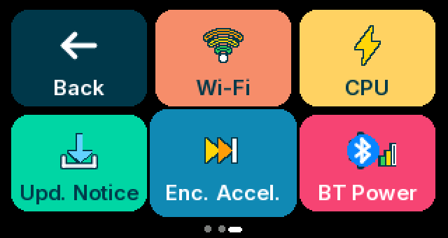
Enc. Accel. في آخر صفحة من Systemصفحته: Off أو On
قدرة البلوتوث: System ← BT PowerR5
القدرة التي يرسل بها بلوتوث الراديو، من -12 إلى 9 dBm (0 dBm عند التسليم). ولا تهمّ إلا أثناء تشغيل البلوتوث (System ← Bluetooth: Ad hoc أو CAT TS-480 أو HID). وعندما يكون البلوتوث مطفأً يحتفظ الراديو بالقيمة ويستعملها عند تشغيله في المرة التالية.
الإعداد
متى تختاره
-12 إلى -3 dBm
الهاتف أو الحاسوب أو جهاز التحكم قريب من الراديو، على الطاولة نفسها. القدرة الأقل تكفي، وتستهلك بطارية أقل قليلًا.
0 dBm (الافتراضي)
مناسبة في معظم الغرف.
3 إلى 9 dBm
ينقطع الاتصال حين يبتعد الهاتف أو الحاسوب أو يكون خلف جدار. وتستهلك بطارية أكثر قليلًا.
الإعداد نفسه موجود في التحكم عبر المتصفح (Settings ← Power and time ← Bluetooth power) وفي صفحة الويب Config (Bluetooth LE TX Power). ويبقى محفوظًا عند إطفاء الراديو. ولـ Wi-Fi إعداد قدرة خاص به، في صفحة Wi-Fi في الراديو.
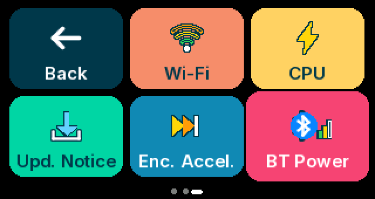
BT Power، آخر مربع في System
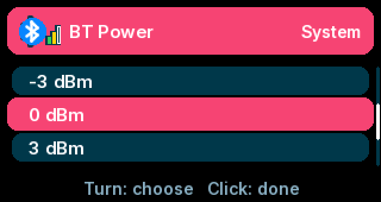
صفحته: من -12 إلى 9 dBm
مكثّف الهوائي على الموجات المتوسطة: Tuning ← CapacitorR5
داخل شريحة الاستقبال، عند مدخل الهوائي، مكثّف توليف صغير للموجات المتوسطة. يستطيع الراديو أن يثبّته على قيمة واحدة، أو أن يترك الشريحة تضبطه بنفسها في كل مرة توالف فيها، لتستخلص أكبر قدر من الإشارة من الهوائي.
الإعداد
ما يفعله الراديو
Off (الافتراضي)
يبقى المكثّف على قيمة ثابتة واحدة. وهذا مناسب لكل الأجهزة تقريبًا.
On
تضبط الشريحة المكثّف بنفسها في كل مرة يتغيّر فيها التردد.
أين يعمل: على النطاقات MW1 وMW2 وMW3 و160M فقط (من 150 kHz إلى 3.5 MHz). أما على FM ونطاقات الموجات القصيرة ونطاق ALL فلا يتغيّر شيء، أيًّا كان اختيارك.
أيّ الأجهزة يفيدها: فقط الجهاز الخالي من دائرة Hi-Z، وهي مرحلة دخل صغيرة تُضاف بين الهوائي السوطي والشريحة. ومعظم أجهزة ATS Mini المبيعة الآن فيها هذه الدائرة، ولا يفيدها هذا الإعداد بشيء؛ ولهذا هو مطفأ. إن لم تكن تعرف نوع جهازك فاتركه Off، أو جرّبه: في المساء والِف محطة ضعيفة على MW2، وانظر إلى مقياس S، ثم حوّل Capacitor إلى On (فيعيد الراديو توليف المحطة) وقارن. أقوى أو أوضح: أبقِه On. مثلها أو أضعف: عُد إلى Off. والتجربة لا تضرّ شيئًا.
الإعداد نفسه موجود في التحكم عبر المتصفح (Settings ← Receiver ← Automatic antenna capacitor) وفي صفحة الويب Config (Automatic Antenna Capacitor). ويبقى محفوظًا عند إطفاء الراديو.
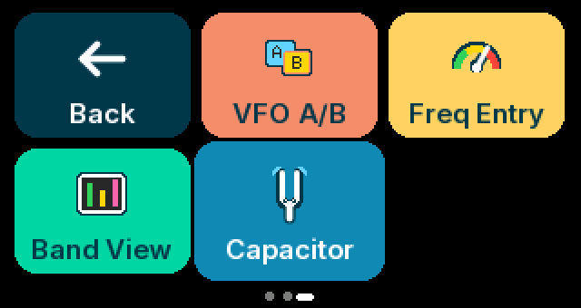
Capacitor في آخر صفحة من Tuningصفحته: Off أو On
القائمة الكلاسيكيةR4
Menu ← Display ← Menu Style ← Classic تعيد القائمة الصغيرة للبرنامج الثابت الرسمي، في زاوية الشاشة. ومنذ R4 فيها المجموعات الست نفسها التي في الجدول أعلاه: اختر مجموعة وانقر؛ وأول سطر في كل مجموعة هو < Back، ويحمل عنوان المربع اسم المجموعة. وبعد تغيير إعداد تعود القائمة إلى مجموعتها. ويعيد Tiles قائمة المربعات.
ثلاثة بنود في Tuning تبحث عن المحطات، كلّ بطريقته: Scan وAuto Scan وSeek. ويضعها القسم ١٨ جنبًا إلى جنب.
٥نمط CW
Menu ← Tuning ← Mode ← CW (بعد AM). تعرض الشاشة تردد إشارة CW نفسها، كما يفعل جهاز إرسال واستقبال CW: والِف حتى يطابق التردد التردد المعلَن وتستقرّ النغمة في منتصف المرشّح.
المرشّح
النغمة
الاستعمال
0.5k (الافتراضي)
500 Hz
النطاقات المزدحمة، والإشارات الضعيفة
1.0k
1000 Hz
إيجاد الإشارات، وتوليف أسرع
1.2k وأعرض
700 Hz
الاستماع عبر النطاق
تبدأ الخطوة من 10 Hz؛ غيّرها في Menu ← Tuning ← Step. ويستعمل CW قيمة معايرة USB الخاصة بالنطاق (Menu ← Ham & SWL ← Calibration).
٦خطة النطاقات
على نطاقات الهواة من 160 إلى 10 m، يُظهر شريط ملوّن تحت المقياس خطة نطاقات الإقليم الأول لـ IARU، ويظهر اسم المقطع الذي أنت فيه بجانب المؤشر.
Auto (الافتراضي): دخول مقطع يضبط أيضًا النمط والمرشّح والخطوة: CW بمرشّح ضيّق في مقطع CW، وUSB للأنماط الرقمية والمنارات، وفي مقطع الصوت LSB تحت 10 MHz وUSB فوقها. وتؤكّد ذلك رسالة قصيرة. وإذا غيّرت النمط بنفسك يبقى اختيارك حتى تغادر المقطع. ومن AM لا يتبدّل إلا حين توالف إلى نطاق هواة من خارجه.
Plan AreaR3
صفحة Plan Area
الاختيار
ما يُظهره
All regions
نطاقات كل الأقاليم: تفاصيل الإقليم الأول حيثما كان النطاق فيه، والأجزاء الأوسع من الإقليمين الثاني والثالث خارجه (80 m حتى 4000 و40 m حتى 7300 kHz)
Region 1
أوروبا وأفريقيا والشرق الأوسط (الافتراضي)
Region 2
الأمريكتان: 160 m من 1800، و80 m حتى 4000، و40 m حتى 7300 kHz
Region 3
آسيا والمحيط الهادئ: 160 m من 1800، و80 m حتى 3900، و40 m حتى 7300 kHz
Iran (EP)
الإقليم الأول دون نطاقات 160 و80 و30 m، التي لا يخصّصها الجدول الوطني
UAE (A6)
الإقليم الأول مع حصر 160 m في 1810–1850 kHz
الأجزاء التي لا يسمح بها البلد المختار تظهر بالرمادي الداكن ويُكتب عليها NOT ALLOWED.
خطّتا الإقليمين الثاني والثالث مبسّطتان وللإرشاد فقط. تختلف التخصيصات الوطنية؛ راجع ترخيصك قبل الإرسال بجهاز آخر.
٧الساعة والمنطقة الزمنية والساعة المزدوجة
يعرض Menu ← System ← Time Zone التوقيت UTC أولًا، ثم كل فارق توقيت، مع أسماء المدن بجانبه: مثل دبي ومسقط بجانب UTC+4. وتتغيّر المدن التي فيها توقيت صيفي تلقائيًا.
صفحة Time Zone
عندما لا تكون المنطقة الزمنية UTC، يتناوب سطر الساعة في مربع المعلومات كل بضع ثوانٍ بين التاريخ والوقت المحليين وUTC. وUTC هو الوقت الذي تستعمله جداول المحطات ومسجّل الإشارات وجدول المنارات. وتعني Time: --:-- أن الساعة لم تُضبط بعد.
يعرض Menu ← System ← Date/Time الوقت الحالي بتوقيت UTC. أدِر لتغيير قيمة، وانقر للانتقال إلى التالية، واضغط ضغطة قصيرة للحفظ. وإذا لم تغيّر شيئًا لا تُمسّ الساعة.
ضبط الساعة تلقائيًا
ليس في الراديو بطارية للساعة، فيضيع الوقت عند إطفائه. لضبطه تلقائيًا عند كل تشغيل:
أضف شبكة Wi-Fi الخاصة بك إلى الراديو (القسم ٢٠).
اختر Menu ← System ← Wi-Fi ← Mode ← Sync Only. يتصل الراديو ويضبط الساعة ثم يطفئ Wi-Fi توفيرًا للبطارية. (ونمط Connect يضبط الساعة أيضًا ويبقى متصلًا.)
الرسائل: Time synchronized (خادم الوقت على الإنترنت)، أو Time set from web (الشبكة تحجب خوادم الوقت، فقُرئ الوقت من خادم ويب)، أو Time sync failed مع سطر ثانٍ يذكر السبب. ودون Wi-Fi تضبط الساعةَ أيضًا محطةُ FM ترسل وقت RDS؛ أو في صفحة الويب للراديو، ينسخ Use Browser Date/Time الوقتَ والمنطقة الزمنية من هاتفك أو حاسوبك.
٨الوقت المتبقي للبطارية
على البطارية، يتناوب الجهد في الأعلى مع تقدير لوقت الاستماع المتبقي، مثل ~8h20 (ثماني ساعات وعشرون دقيقة). وتعني ~ أنه يُفترض استهلاك نموذجي؛ وبعد نحو عشر دقائق يستعمل الراديو الاستهلاك الذي قاسه بنفسه وتختفي ~. ويغيّر سطوعُ الشاشة ومستوى الصوت وWi-Fi كلّها النتيجة. وعند الشحن عبر USB يظهر رمز الشحن.
R5يختار Menu ← Display ← Battery ما يظهر بجانب أيقونة البطارية: Volts + time (كما سبق)، أو Volts، أو Percent، أو Icon only.
٩التوهين التلقائي
في AM، ومع ضبط Menu ← Audio ← AGC/ATTN على On، قد تُثقل إشارةٌ قوية جدًا (محطة موجات متوسطة محلية، أو مرسل كبير ليلًا) جهازَ الاستقبال وتسبّب صوتًا مشوّهًا ومحطات غير مرغوبة. فيضيف الراديو عندئذٍ توهينًا خطوةً خطوة، ويزيله مجددًا على المحطات الأضعف. وأثناء عمله يُظهر مربع المعلومات Att: A12 (A تعني تلقائي). لإيقافه: Menu ← Audio ← Auto Att.؛ والضبط اليدوي لـ AGC/ATTN له الأولوية دائمًا.
١٠المنارات اللاسلكيةR2
تتناوب المنارات الثماني عشرة لمشروع NCDXF/IARU الدولي على 14100 و18110 و21150 و24930 و28200 kHz، عشر ثوانٍ لكلٍّ منها، وتتكرّر كل ثلاث دقائق. ترسل كل منارة إشارة ندائها بـ CW ثم أربع شرطات بقدرة 100 W و10 W و1 W و0.1 W؛ وعدد الشرطات التي تسمعها يدلّك على جودة المسار.
على 14100: المنارة التي تبثّ والثواني المتبقية
على أحد هذه الترددات الخمسة (CW أو USB)، يُظهر سطر المحطة المنارةَ التي تبثّ والثواني المتبقية، مثل Beacon 4S7B Sri Lanka 6s. ويجب أن تكون ساعة الراديو مضبوطة.
يجعل Menu ← Ham & SWL ← Beacons مع إشارة نداء الراديوَ يتبع تلك المنارة: كل عشر ثوانٍ يغيّر النطاق مع المنارة، من 20 m إلى 10 m، وينتظر وهي صامتة. والتوليف يدويًا ينهي المتابعة.
R5تبثّ المنارة ٥٠ ثانية من كل ثلاث دقائق. وأثناء صمتها ينتظر الراديو على 14.100 MHz في CW، حيث تبدأ دورتها التالية، ويذهب إلى هناك فور بدء المتابعة، فترى على الفور أنها بدأت. والتوليف يدويًا، أو نطاق آخر، أو FM ينهي المتابعة حيث أنت. أما Off أو Names only في القائمة، أو Stop في التحكم عبر المتصفح، فينهيها ويعيد الراديو إلى النطاق والتردد والنمط التي كان عليها من قبل. وفي التحكم عبر المتصفح، في أعلى تبويب Beacons يوجد Follow a beacon: اختر المنارة، واضغط Start، وStop لإنهائها؛ ويقول السطر بجانب الأزرار ما الذي يُتابَع، ولماذا لم تبدأ المتابعة أو انتهت (الساعة غير مضبوطة، أو ابتعدتَ بالتوليف).
R4أول خيارين في القائمة: Off يخفي أيضًا أسماء المنارات، وNames only يسمّي المنارة التي تبثّ على هذه الترددات الخمسة دون متابعة أيٍّ منها. ويبقى الاختيار محفوظًا بعد إعادة التشغيل. وخريطة عالمية حيّة للمنارات موجودة في صفحة التحكم عبر المتصفح (القسم ٢١).
١١مسح الذاكرةR2
يمرّ Menu ← Memory ← Mem Scan على الذاكرات المحفوظة (اثنتان على الأقل) ويتوقّف عند أيٍّ منها فيها إشارة؛ ويتابع بعد أربع ثوانٍ من زوال الإشارة. والإشارة تعني مستوى Squelch للنمط إن كنت ضبطته، وإلا فـ SNR بقيمة 6 dB أو أكثر. وتدوير المقبض أو نقرة يوقف المسح، ويبقى الراديو على تلك الذاكرة.
١٢مسجّل الإشاراتR2
يكتب Menu ← Memory ← Logger سطرًا كل 10 ثوانٍ، أو كل دقيقة، أو كل خمس دقائق: وقت UTC، والتردد، والنمط، والنطاق، وشدة الإشارة (dBµV)، وSNR (dB)، واسم المحطة. اترك الراديو على تردد واحد طوال الليل لترى متى يُفتح مسار ومتى يُغلق.
في صفحات الويب للراديو، تجمع صفحة Log كل ذلك في مكان واحد (R5): فاصل التسجيل أو Off، ومدى امتلاء الملف، وآخر ٥٠ سطرًا فيه (الأحدث أولًا)، وDownload (CSV) لفتحه في جدول بيانات مثل Excel، وDelete log. وعلى الراديو، يفرغه Clear log في القائمة نفسها (انقر للتأكيد). ويتوقّف التسجيل تلقائيًا عند ميغابايت واحد.
١٣انتشار الموجاتR2
يعرض Menu ← Ham & SWL ← Propagation التدفّق الشمسي (SFI)، وعدد البقع الشمسية، ومؤشّرَي A وK، ومستوى الأشعة السينية، وظروف النهار والليل للنطاقات 80–40 و30–20 و17–15 و12–10 m، من hamqsl.com (N0NBH). وتُجلب البيانات كلما اتصل Wi-Fi (بما في ذلك مزامنة الساعة عند التشغيل)، مرة كل ١٥ دقيقة على الأكثر. وكلما ارتفع SFI وانخفض K كانت الظروف أفضل على النطاقات الأعلى.
١٤جداول البث EiBiR2
يحمّل Menu ← Ham & SWL ← Load EiBi الجدول الموسمي لمحطات البث على الموجات القصيرة، مع أيام بثّها (يحتاج إلى Wi-Fi). والمحطة التي لا تبثّ إلا في نهاية الأسبوع لا تظهر إلا في تلك الأيام، وتأتي اللغة والمنطقة المستهدفة بعد الاسم، مثل BBC World Service [E > ME] (بالإنجليزية، إلى الشرق الأوسط). وبعد التحديث من R1، حمّل الجدول مرة أخرى.
١٥التحكم CAT من الحاسوبR2
يجعل Menu ← System ← USB Port ← CAT TS-480 الراديوَ يجيب عن أوامر Kenwood TS-480 على منفذ USB، فتستطيع البرامج قراءة التردد والنمط وضبطهما وقراءة شدة الإشارة. في البرنامج (flrig، أو Hamlib، أو WSJT-X للاستقبال فقط، أو fldigi، أو برنامج سجلّ) اختر Kenwood TS-480 (Hamlib rig 2028) على المنفذ التسلسلي للراديو، مع إيقاف split وCAT PTT؛ ولا تهمّ السرعة. وتُرفض أوامر الإرسال، لأن الراديو يستقبل فقط. ولأدوات التحكم عن بُعد ولقطات الشاشة، عُد إلى Ad hoc.
منذ R5 يُسمّى الاختيار CAT TS-480 (كان CAT) وهو موجود على منفذين آخرين: TCP Port ← CAT TS-480 لبرنامج على شبكة Wi-Fi نفسها (عنوان الراديو، المنفذ 60000)، وBluetooth ← CAT TS-480. والجديد معه VFO A وB، وكاتم الضوضاء، والخطوات صعودًا ونزولًا، وتقارير الحالة التلقائية؛ ونمط CW هو النمط ٣، كما في TS-480.
مثال: flrigR5
flrig يعرض الراديو على 93.4 MHz FM
flrig برنامج مجاني للتحكم بأجهزة الراديو لأنظمة macOS وWindows وLinux، من w1hkj.org؛ وقد جُرّب هذا الفصل بالإصدار 2.0.12 على Mac.
على الراديو اختر USB Port ← CAT TS-480 وصِل الكابل.
في flrig افتح Config ← Setup ← Xcvr. Rig: TS-480SAT. Port: المنفذ التسلسلي للراديو؛ على Mac يبدأ اسمه بـ /dev/cu.usbmodem. Baud: أي قيمة، مثل 115200. اترك RTS/CTS وRTS +12 v وDTR +12 v دون علامة، واضغط Init.
تحت Poll ضع علامة على S-mtr، وإلا بقي مقياس S في flrig فارغًا.
تحت Restore أزل العلامات إن أردت أن يحتفظ الراديو بما ضبطته من البرنامج. ومع وجودها، يعيد flrig الراديو كما وجده عند الخروج.
عبر Wi-Fi بدل الكابل: على الراديو TCP Port ← CAT TS-480؛ وفي flrig Config ← Setup ← TCPIP & TCI، أدخل عنوان الراديو والمنفذ 60000 وضع علامة على Use tcpip. يمكن وصل برنامج واحد في كل مرة؛ ويمكن أن تكون صفحة التحكم عبر المتصفح مفتوحة أيضًا.
ما الذي ستراه
يتبع البرنامجُ المقبض، ويضبط التردد والنمط ومستوى الصوت؛ ولا يفعل Tune والإرسال شيئًا. ومستوى الصوت في flrig بالنسبة المئوية: 50 هناك تساوي 31 على مقياس الراديو البالغ 63.
لا يعرض flrig شيئًا فوق 99.999 MHz، لأن TS-480 ينتهي عند 60 MHz: فلا يظهر نطاق FM العلوي والذاكرات التي فيه. أما الراديو نفسه فيعمل كالمعتاد. وقد تتوقّف برامج أخرى عند 60 MHz.
أثناء Seek وScan يقف البرنامج: يجيب الراديو حين ينتهي البحث. ويتبع Auto Scan وMem Scan أثناء سيرهما.
البرنامج المتصل عبر Wi-Fi يُبقيه يعمل حين تُفتح صفحة FT8 أو CW أو Digital، ويتبع التردد الذي توالفه الصفحة.
الخروج من البرنامج يترك الراديو كما هو. وإن نُزع الكابل أثناء عمل flrig توقّف عن الإجابة: أغلقه وأعد فتحه.
١٦مفكّك ترميز FT8 وFT4R3
يفتح Menu ← Ham & SWL ← FT8/FT4 صفحة تملأ الشاشة تفكّ ترميز إشارات FT8 من صوت الراديو نفسه. يوالف الراديو إلى تردد FT8 في النطاق الذي أنت عليه (أو 40 m) بنمط USB مع المرشّح 3.0k. وتحت العنوان يتحرّك شلال، وبعد كل فترة مدتها 15 ثانية تُسرد الرسائل مع تقرير الإشارة (dB) والتردد الصوتي (Hz) والنص؛ ونداءات CQ باللون الأخضر.
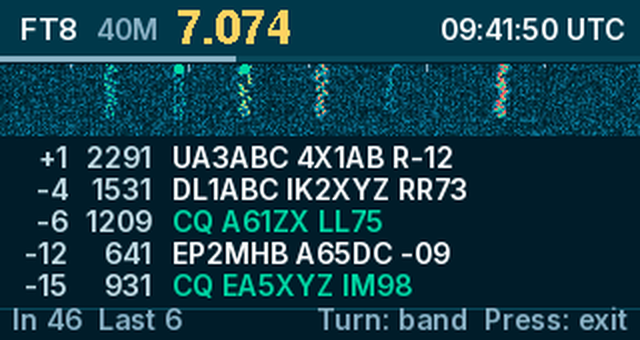
صفحة FT8 على 40 m
التدوير: تغيير النطاق: 160 و80 و40 و30 و20 و17 و15 و12 و10 m، ثم ترددات FT4 من 80 إلى 10 m (FT4 بالأصفر، بفترات مدتها 7.5 ثانية).
مع ضبط الساعة (مزامنة Wi-Fi) يفكّ الترميز من الفترة الأولى. ودون ساعة يفكّ الترميز أيضًا: يُظهر العنوان No clock: syncing بينما يستنتج توقيت الفترات من المحطات التي يسمعها (عادةً دقيقة أو اثنتان)، ثم Synced to band.
أسفل اليسار: In هو مستوى الصوت الواصل إلى مفكّك الترميز (من 10 إلى 150 جيد)، وLast عدد الرسائل في الفترة الأخيرة.
R5يمكن أيضًا تشغيل الصفحة ومتابعتها من متصفح، مع بلدان المحطات وخريطة (القسم ٢٥). وهي تأخذ صوت الراديو حتى 3 kHz، وهو كل ما يستعمله FT8 وFT4؛ وخيار 6 kHz في القسم ٢٥. وإشارات لتجربتها في القسم ٢٦.
تحتاج هذه الصفحة إلى اللوحة V4B، التي توصل خط مكبّر الصوت بالمعالج؛ وتُظهر اللوحات الأخرى No audio on the decoder input. ويتوقّف Wi-Fi مؤقتًا أثناء فتح الصفحة، إلا إذا كان التحكم عبر المتصفح مفتوحًا في متصفح، أو كان برنامج متصلًا عبر Wi-Fi (القسم ١٥)؛ عندئذٍ تعمل الصفحة وWi-Fi يعمل. وفي اللوحات التي تأخذ الصوت بعد مضخّم مكبّر الصوت يبقى مكبّر الصوت يعمل (Spk بجانب المستوى). والسمّاعات الموصولة بالراديو تقطع هذا الخط: انزعها لفكّ الترميز.
كثيرًا ما تكون إشارات FT8 أدنى من الضوضاء بـ 15 إلى 20 dB. والهوائي التلسكوبي داخل المنزل يسمع القليل منها: بجانب نافذة أو على شرفة، أو مع بضعة أمتار من السلك مشبوكة بالهوائي، يتغيّر الأمر كثيرًا. أبعِد الشواحن ومصابيح LED والحواسيب المحمولة عن الراديو وشغّله على البطارية.
١٧مفكّك ترميز CWR3
يحوّل Menu ← Ham & SWL ← CW Decoder شفرة مورس إلى نص في صفحة تملأ الشاشة، مع السرعة (WPM)، وتردد النغمة، وشريط للمستوى، ومؤشّر للمفتاح. والِف بحيث تكون النغمة في منتصف مرشّح CW. التدوير: توليف، النقرة: مسح النص، الضغطة القصيرة: الخروج. وتُتابَع السرعة تلقائيًا من نحو ٥ إلى ٤٠ كلمة في الدقيقة. وتُتجاهَل فرقعات الكهرباء الجوية والطقطقات؛ والحروف التي لا تُقرأ تظهر بالرمز *. ومنذ R4 تستعمل الصفحة مستوى ثابتًا من جهاز الاستقبال، فلا يعتمد فكّ الترميز على إعداد مستوى الصوت.
يُظهر Menu ← Ham & SWL ← CW Strip ← On النص المفكوك أسفل الشاشة الرئيسية في نمط CW. ومثل صفحة FT8 يحتاج إلى اللوحة V4B، ويعمل وWi-Fi مطفأ.
١٨Scan وAuto Scan وSeekR3
ثلاثة بنود في Menu ← Tuning تبحث عن المحطات. أسماؤها متشابهة لكنها تفعل أشياء مختلفة: Scan يريك النطاق، وAuto Scan يمرّ على النطاق نيابةً عنك، وSeek ينقلك إلى المحطة التالية. (كان اسم Auto Scan هو Scanner حتى R4.)
Scan
Auto Scan
Seek
ما هو
صورة للنطاق. ترى بنظرة واحدة أين الإشارات، ثم توالف إلى قمة.
بحث يستمرّ. تستمع عبر النطاق دون أن تلمس المقبض.
قفزة إلى المحطة التالية، مرة واحدة. تنتقل من محطة إلى محطة على مهلك.
ما يحدث
يقيس الراديو 200 نقطة حول ترددك مرة واحدة والصوت مكتوم، ثم يعود ويرسم المخطط: بعرض 2 MHz، و20 MHz على FM. والعلامة الحمراء هي ترددك.
يتقدّم الراديو على النطاق خطوةً خطوة من ترددك. وعند إشارة يتوقّف فتسمعها (يقول السطر Hold)، ثم يتابع. وعند حافة النطاق يتابع من الطرف الآخر.
عند كل تدوير للمقبض يبحث الراديو في ذلك الاتجاه والصوت مكتوم، ويتوقّف عند أول محطة. ويبقى هناك حتى تدير مرة أخرى.
التدوير
يوالف كالمعتاد، وينزلق المخطط تحت العلامة الحمراء. ولا يتوقّف عند المحطات.
يمينًا: المحطة التالية صعودًا. يسارًا: التالية نزولًا. والضغط مع التدوير يوالف يدويًا.
النقرة
تغلق Scan. والضغطة القصيرة تعيد القياس.
يتوقّف على التردد الحالي.
تغلق Seek. والضغطة القصيرة تبدّل إلى الجدول (أدناه).
الثلاثة في Tuning، الصفحة الثانية
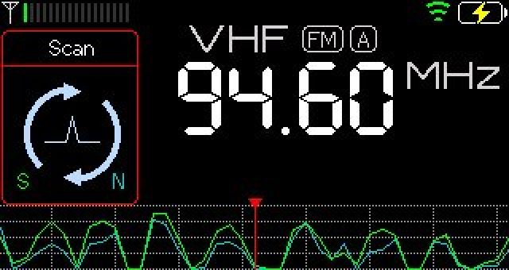
Scan: الإشارة (S، أخضر) ونسبة الإشارة إلى الضوضاء (N، أزرق)
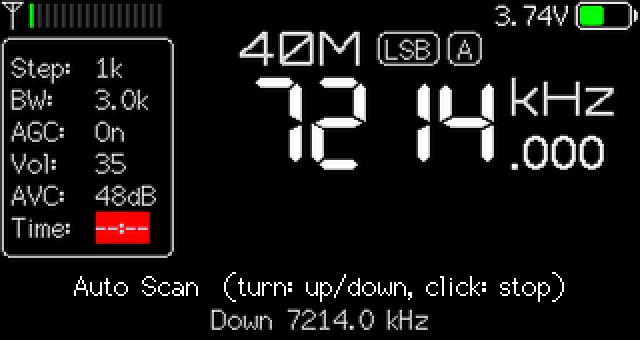
Auto Scan يتحرّك نزولًا على 40 m
يتوقّف Auto Scan عند إشارة بمستوى Squelch إن كان مضبوطًا، وإلا عند SNR بقيمة 6 dB أو أكثر. وفي SSB وCW يبقى ما دامت المحطة مسموعة، ويتابع بعد أربع ثوانٍ من غيابها. وعلى بثّ AM وFM، الذي لا يصمت أبدًا، يبقى خمس ثوانٍ على كل محطة؛ وفي FM يتخطّى الـ 200 kHz التالية بعد كل محطة كي لا توقفه محطة قوية مرتين. ويتحرّك بخطوة التوليف، و1 kHz على الأقل في SSB، و500 Hz في CW، و100 kHz في FM. وإن توقّف عند الضوضاء كثيرًا، فاضبط مستوى Squelch أولًا.
يستعمل Seek البحث الخاص بشريحة الاستقبال في AM وFM. وفي SSB وCW (منذ R4) يبحث في النطاق 1 kHz في كل مرة ويتوقّف عند أول إشارة، 200 kHz على الأكثر في كل تدوير؛ وإن لم يجد شيئًا يقول ذلك ويعود إلى حيث بدأ. والضغطة القصيرة في Seek تضع ساعةً في مربعه: فيذهب كل تدوير بعدها إلى التردد التالي الذي يذكر فيه جدول EiBi (القسم ١٤) محطةً تبثّ في هذه الساعة. ويحتاج ذلك إلى تحميل الجدول وضبط الساعة، ولا يتوفّر على FM.
لعرض نطاق كامل على شاشة كاملة، مع قائمة بأقوى إشاراته، انظر Band View في القسم ٢٣.
١٩قفل التردد وسرعة المعالجR3
Menu ← Tuning ← Freq Lock ← On: يضبط المقبض مستوى الصوت بدل التوليف، ويتوقّف التوليف بالخانات (الضغط مع التدوير). ويدلّ قفل صغير بجانب النمط على أن القفل يعمل؛ ويبقى بعد إعادة التشغيل.
القفل بجانب النمطصفحة CPU
Menu ← System ← CPU (كان اسمه Performance حتى R3): 80 MHz (كالبرنامج الثابت الرسمي، أطول عمر للبطارية)، أو 160 MHz، أو 240 MHz. الأسرع يجعل الشاشة والقوائم أسرع ويستهلك بطارية أكثر؛ ويُظهر تقدير البطارية الفرق. وتعمل صفحة FT8 دائمًا بسرعة 240 MHz أثناء فتحها. R5وكذلك صفحة Digital، وكذلك الراديو حين يكون التحكم عبر المتصفح مفتوحًا في متصفح، كي تجيب الصفحة بسرعة؛ ويعود إعدادك عند إغلاقها. وتُظهر صفحة الويب Status السرعة التي ضبطتها.
٢٠Wi-Fi وصفحات الويب في الراديوR4
كل إعدادات Wi-Fi في صفحة واحدة: Menu ← System ← Wi-Fi. يذكر أعلاها أين تفتح صفحات الويب للراديو: عنوان IP للراديو على شبكتك المنزلية (أو atsmini.local)، أو 10.1.1.1 بعد الانضمام إلى شبكة الراديو نفسه. وتحتها ثلاثة أسطر: Mode وJoin a network وPower. انقر Mode أو Power، وأدِر لتغيير القيمة، وانقر للتطبيق؛ والضغطة القصيرة تلغي.
صفحة Wi-Fi: العنوان، وMode، وJoin a network، وPowerالشبكات في المدى مع الإشارة والحماية والقناة
Mode
ما يفعله
Off
Wi-Fi مطفأ (أقل استهلاك للبطارية)
AP Only
ينشئ الراديو شبكته الخاصة: انضمّ إلى ATS-Mini وافتح http://10.1.1.1
AP+Connect
شبكته الخاصة، ومتصل في الوقت نفسه بشبكتك المنزلية
Connect
متصل بشبكتك المنزلية فقط
Sync Only
يتصل عند التشغيل، ويضبط الساعة، ثم يُطفأ
Power: قدرة إرسال Wi-Fi، من 2 إلى 20 dBm، و17 dBm عند التسليم. القدرة الأقل تساعد اللوحات التي تعيد التشغيل حين يرسل Wi-Fi وتوفّر بعض البطارية، على حساب المدى.
R5الإعداد نفسه، بالخطوات نفسها، موجود في التحكم عبر المتصفح وفي صفحة الويب Config، وبجانبه Bluetooth LE TX Power (0 dBm عند التسليم؛ وعلى الراديو هو System ← BT Power). والراديو الذي كان مضبوطًا على Low أو Lowest قبل R5 يحتفظ بـ 13 أو 9 dBm.
الانضمام إلى شبكتك المنزلية من الراديو
يسرد Join a network الشبكات من حولك، الأقوى أولًا. اختر واحدة واكتب كلمة المرور على لوحة المفاتيح على الشاشة: أدِر المقبض للتنقّل فوق المفاتيح وانقر لكتابة كل حرف. يعطي aA الحروف الكبيرة (لحرف واحد)، و#+= الرموز، وDel يحذف، وShow يُظهر كلمة المرور. تظهر كلمة المرور نجومًا ولا يظهر منها إلا الحرف الأخير، كي تلاحظ أخطاء الكتابة. ويضيء OK بعد ثمانية أحرف. تُحفظ الشبكة، ويتصل الراديو فورًا (نمط AP+Connect) ويعرض عنوان IP الخاص به بخط كبير.
لوحة المفاتيح على الشاشة لكلمة المرور
في الراديو Wi-Fi بتردد 2.4 GHz فقط؛ ولا تظهر شبكات 5 GHz. وإن كان جهاز التوجيه (الراوتر) يستعمل اسمًا واحدًا للنطاقين، يتصل الراديو على 2.4 GHz.
تضمّ صفحات الويب للراديو (بالسمة الداكنة) الإعدادات والذاكرات والتحديثات وسجلّ الإشارات. ويمكن أيضًا حفظ الشبكات من صفحة Wi-Fi فيها. وفي http://<IP>/update يمكن تثبيت ملف …-ota.bin لإصدار ما مباشرة.
R5لكل صفحة، بما فيها التحكم عبر المتصفح، الرأس نفسه: شريط RESONIK مع إصدار البرنامج الثابت، وتحته صفّ الصفحات: Status وControl وMemory وConfig وWi-Fi وUpdate وPatches وLog، والصفحة التي أنت فيها بالأزرق. وفي أسفل كل صفحة روابط إلى resonik.mikroutik.com وهذا الدليل وGitHub.
٢١التحكم عبر المتصفحR4
حين يكون الراديو وهاتف أو حاسوب على الشبكة نفسها، افتح http://<IP>/control (أو المس Control في صفحات الويب للراديو). الراديو كلّه في المتصفح، وكل تغيير يُطبَّق على الراديو فورًا ويُحفظ. ويُظهر الأعلى دائمًا التردد، والنطاق، والنمط، والخطوة، والمرشّح، ومقياس S، والبطارية (بالفولت والنسبة المئوية)، والذاكرة التي أنت عليها، واسم محطة RDS ونصّها.
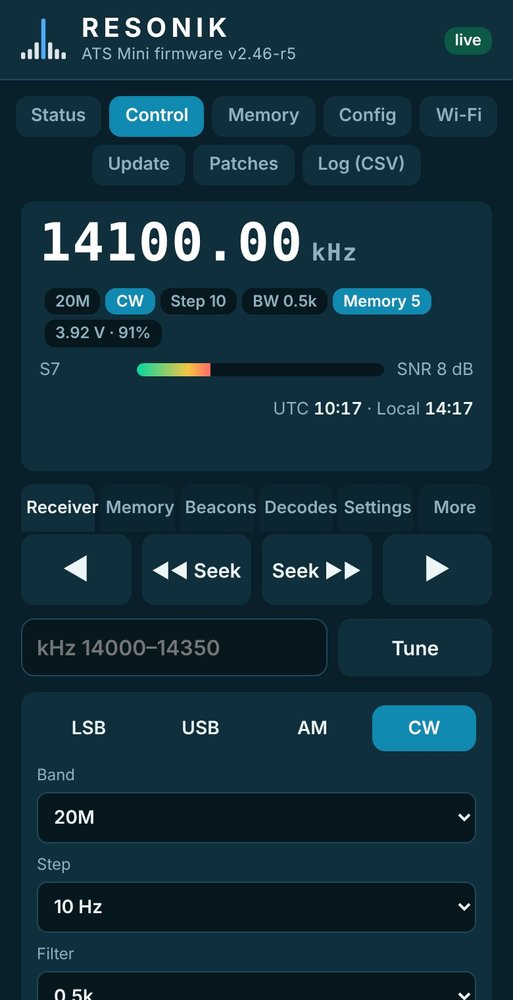
تبويب Receiver على هاتفتبويب Beacons: خريطة عالمية للمنارات
التبويب
ما يفعله
Receiver
التوليف بالخطوات، وSeek، ومربع للتردد (kHz؛ وMHz على FM)، وأزرار الأنماط (مع Stereo أو Mono على FM)، وقوائم Band وStep وFilter وAGC، ومستوى الصوت، وزر لكل نطاق، وراسم النطاق: يقيس Sweep الإشارة عند 41 نقطة حول التردد؛ المس عمودًا لتوالف إليه. ومنذ R5 يبدأ Band View عرضَ Band View في الراديو ويُظهره في المتصفح (القسم ٢٣)
Memory
التوليف إلى ذاكرة، وحفظ المحطة الحالية، وحذف ذاكرة
Beacons
خريطة للمنارات الثماني عشرة لـ NCDXF/IARU. والمنارات الخمس التي تبثّ تنبض بلون نطاقها. المس ترددًا لتوالف إليه بنمط CW: في كل فترة مدتها عشر ثوانٍ يقيس الراديو الإشارة ويلوّن تلك المنارة بالأخضر (مسموعة جيدًا)، أو بالأصفر (ضعيفة)، أو بالرمادي (غير مسموعة). وبعد دورة واحدة من ثلاث دقائق ترى إلى أي أجزاء العالم النطاقُ مفتوح. المس منارة لتتبعها عبر النطاقات، أو استعمل Follow a beacon مع Start وStop في الأعلى (R5، القسم ١٠)
Decodes R5
يبدأ مفكّكات الترميز في الراديو ويوقفها ويُظهر ما تفكّه: الشلال، ورسائل FT8 وFT4 مع البلد والعلم، وخريطة، ونصوص CW وRTTY وNAVTEX وPSK31، وخرائط WEFAX (القسم ٢٥)
Settings
كل إعداد في قوائم الراديو، في خمس مجموعات. أما أنماط Bluetooth وUSB وWi-Fi وتحديثات البرنامج الثابت فتبقى على الراديو نفسه، كي لا ينقطع الاتصال
More
شاشة الراديو نفسها مع مقبضه وأزراره (لقوائمه ولصفحتي FT8 وCW؛ تُرسل فقط أثناء ظهورها)، وListen
R5بجانب اسم المحطة تُظهر الصفحة ساعة الراديو: UTC، وLocal حين لا تكون منطقة الراديو الزمنية UTC؛ وClock not set حتى يحصل الراديو على الوقت. وتظهر الملاحظات القصيرة من الراديو (بحث لم يجد شيئًا، أو منارة تُتابَع) أسفل النافذة. وأثناء فتح الصفحة في متصفح يشغّل الراديو معالجه بأقصى سرعة كي تجيب الصفحة بسرعة؛ وهذا يستهلك بطارية أكثر قليلًا.
الاستماع في المتصفح (تجريبي)
يشغّل Listen صوت الراديو في المتصفح. يعمل على لوحات V4B فقط، وجودته نحو جودة الهاتف: يُؤخذ الصوت من خط مكبّر الصوت بمعدل 8 kHz، ويتشارك Wi-Fi وجهاز الاستقبال محوّلًا واحدًا. ويخفّف Hiss filter الهسهسة. ويجعل Radio speaker while listening مكبّر صوت الراديو أهدأ، لكنه على V4B يُضعف أيضًا صوت المتصفح، لذا يعطي Normal أفضل صوت. ويعمل على أفضل وجه في Chrome.
في لوحات V4B تأخذ مفكّكات الترميز وListen صوتها من خط مكبّر الصوت. ومع سمّاعات موصولة بالراديو ينقطع هذا الخط: فلا تعمل مفكّكات FT8 وFT4 وCW ولا صوت المتصفح. انزع السمّاعات لفكّ الترميز.
٢٢الإعداد عند التشغيل الأولR5
الراديو المثبَّت حديثًا، أو الذي أُعيد إلى ضبط المصنع، يسأل عن أربعة أشياء بالتتابع: المنطقة الزمنية، والمقبض (20 أو 30 نقرة في الدورة)، وخطة النطاقات لترخيصك، وهل تريد إعداد Wi-Fi الآن. أدِر للاختيار، وانقر للسؤال التالي، واضغط ضغطة قصيرة للتخطّي. ويمكن تغيير كل شيء لاحقًا في القائمة. والراديو المحدَّث من إصدار سابق يحتفظ بإعداداته ولا تظهر له هذه الصفحات.
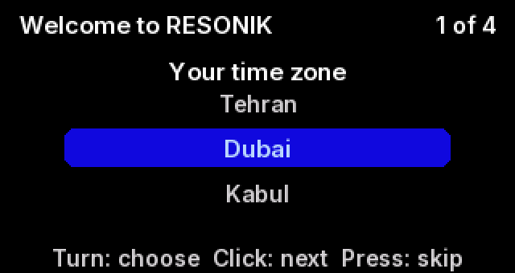
أول الأسئلة الأربعة
لرؤيتها مرة أخرى، أعِد الراديو إلى ضبط المصنع: أطفئ الراديو، واضغط المقبض وأمسكه، ثم شغّله واستمرّ في الإمساك حتى تظهر Resetting Preferences.
تمحو إعادة ضبط المصنع الإعدادات والذاكرات وشبكات Wi-Fi والملفات في الراديو (الجدول، وسجلّ الإشارات، وصورة البدء، وتصحيحات DSP). احفظ نسخة احتياطية أولًا من صفحة الويب Config (القسم ٢٧) واستعِدها بعد ذلك.
٢٣Freq Entry وBand View وAuto-StoreR5
كتابة تردد: Tuning ← Freq Entry
لوحة أرقام للوصول مباشرة إلى تردد. أدِر المقبض للتنقّل فوق المفاتيح وانقر للضغط على أحدها: اكتب الرقم، ثم kHz أو MHz. فـ 14074 ثم kHz، أو 14.074 ثم MHz، كلاهما يوالف 14.074 MHz. وحين يكون التردد خارج النطاق الذي أنت عليه، يغيّر الراديو النطاق، وينتقل إلى FM أو منه عند الحاجة. يحذف Del الخانة الأخيرة، وClear جميعها، ويخرج Back أو الضغطة القصيرة دون توليف. ويقبل من 150 kHz إلى 30 MHz ومن 64 إلى 108 MHz.
رؤية النطاق: Tuning ← Band View
يمسح Band View 160 ترددًا حول التردد الذي أنت عليه، مرة بعد مرة. أعلى الصفحة هو المسح الجاري على شكل أعمدة، تمتلئ من اليسار أثناء تقدّمه؛ وتحته تشكّل عمليات المسح المكتملة شلالًا، الأحدث في الأعلى. الإشارات الضعيفة زرقاء، والقوية صفراء. ويذكر السطر تحت العنوان التردّدين اللذين يبدأ عندهما العرض وينتهي، ويذكر سطر العنوان التردد تحت المؤشّر. والصوت مكتوم أثناء ذلك، ويستغرق المسح بضع ثوانٍ، لأن جهاز الاستقبال يحتاج إلى أن يستقرّ على كل تردد. التدوير: تحريك المؤشّر، النقرة: التوليف إلى هناك، الضغطة القصيرة: الخروج.
Freq Entry: 14074 ثم kHzBand View على نطاق FM
في التحكم عبر المتصفح، يبدأ Band View في مربع Band scope العرضَ نفسه على الراديو ويُظهره في المتصفح؛ انقر قمةً لتوالف إليها، فينتهي العرض، أو اضغط Stop.
ملء الذاكرات: Memory ← Auto-Store
يمسح Auto-Store مرة واحدة حول التردد الذي أنت عليه ويضع أقوى المحطات في خانات الذاكرة الفارغة، باسم Auto. وتُتخطّى المحطات المحفوظة من قبل.
٢٤RTTY وNAVTEX وPSK31 وWEFAXR5
يفتح Menu ← Ham & SWL ← Digital صفحة تملأ الشاشة تفكّ ترميز خمسة أنواع من الإشارات من صوت الراديو نفسه. تحوّل الراديو إلى USB مع المرشّح 3.0k، وترسم طيف ما تسمعه مع علامات على النغمات التي تستمع إليها، وتكتب النص تحته. ويجد مفكّك الترميز الإشارة بنفسه: والِف حتى تظهر الإشارة في الصورة.
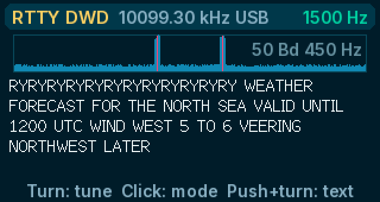
RTTY DWD: التردد الذي عليه الراديو، والنغمتان، وتردد النغمة بالأخضر، والنص
النمط
ما يفكّه
RTTY
المبرقة الراديوية للهواة: 45.45 baud، وإزاحة 170 Hz. وتُقرأ المحطات العادية والمعكوسة على حدّ سواء.
RTTY DWD
هيئة الأرصاد الجوية الألمانية: 50 baud، وإزاحة 450 Hz. طقس للملاحة البحرية، بالإنجليزية غالبًا.
NAVTEX
رسائل السلامة للسفن: التحذيرات الملاحية والطقس. إحدى عشرة قناة: 518 kHz (بالإنجليزية)، و490 kHz (بلغة البلد)، و4209.5 kHz، وثماني قنوات على الموجات القصيرة لأعالي البحار، من 4210 إلى 26100.5 kHz.
خرائط الطقس (الفاكس الراديوي)، 120 سطرًا في الدقيقة. تُرسم الخريطة على الشاشة، وبحجم أكبر في المتصفح (القسم ٢٥)، حيث ينزّلها Save picture.
النقرة: النمط التالي. التدوير: التوليف (في NAVTEX: القناة التالية). الضغطة القصيرة: الخروج؛ ويعود الراديو تمامًا كما كان.
يحتفظ كل نمط بتردده حتى إطفاء الراديو. وفي المرة الأولى تبدأ الأنماط على RTTY 14080، وRTTY DWD 10099.3، وPSK31 14070، وWEFAX 8038.1 kHz. وإذا فُتحت الصفحة على الموجات القصيرة أو المتوسطة تبقى حيث الراديو؛ ولا تعمل أبدًا على FM.
يُظهر العنوان النمط، والتردد الذي يوالف إليه الراديو، وUSB (وفي NAVTEX القناة). وفي الأعلى يمينًا تردد النغمة الذي وجده مفكّك الترميز، بالأخضر، أو No signal؛ وسرعة النمط وإزاحته في زاوية الطيف. ومن دون إشارة لا يُكتب شيء، كي لا تملأ الضوضاء الشاشة بالحروف: تعني No signal أنه لا يُستقبل شيء هناك، لا أن شيئًا معطّل. ومحطات لتجربة كل نمط في القسم ٢٦.
التوليف إلى محطة
تعمل الصفحة بنمط USB، ويُظهر عنوانها التردد الذي يوالف إليه الراديو. تذكر قوائم المحطات تردد الإشارة نفسها؛ ويجب أن يوالَف الراديو أدنى منه قليلًا، كي تخرج النغمات صوتًا حول 1500 Hz، في منتصف الطيف. اكتب التردد بـ Menu ← Tuning ← Freq Entry (القسم ٢٣) ثم افتح الصفحة، أو أدِر المقبض في الصفحة.
النمط
والِف الراديو إلى
مثال
يكون صحيحًا حين
RTTY
لا ترددات ثابتة: أدِر ببطء عبر جزء RTTY من نطاق.
20M: من 14080 إلى 14099 kHz، غالبًا في نهاية الأسبوع.
تستقرّ الخطوط الحمراء على قمّتين بينهما 170 Hz، ويكون الرقم في الأعلى يمينًا أخضر، ويظهر النص.
RTTY DWD
أدنى بـ 1.5 kHz من التردد المذكور.
المذكور 10100.8 kHz: والِف إلى 10099.30 kHz. المذكور 7646: والِف إلى 7644.50. المذكور 4583: والِف إلى 4581.50.
تستقرّ الخطوط الحمراء على قمّتين بينهما 450 Hz، ونحو 1500 Hz بالأخضر؛ RYRYRY ثم نص الطقس.
NAVTEX
لا شيء للتوليف: أدِر المقبض إلى القناة فتوالفها الصفحة، أدنى بـ 1.5 kHz.
القناة 518 kHz: الراديو على 516.50 kHz.
تظهر sync بجانب الرقم الأخضر.
PSK31
التردد المذكور نفسه.
14070.00 kHz، وكذلك 7040.00 kHz.
خطوط رفيعة ثابتة في الطيف؛ ويستقرّ الخط الأحمر على أقواها.
WEFAX
أدنى بـ 1.9 kHz من التردد المذكور.
المذكور 8040 kHz: والِف إلى 8038.10 kHz.
تتكوّن الخريطة سطرًا بعد سطر.
لا داعي للدقة مع RTTY وRTTY DWD: يبحث مفكّك الترميز عن النغمتين في الطيف كلّه وينقل الخطوط الحمراء إليهما، فأيّ موضع بين 1 و2 kHz أدنى من التردد المذكور يعمل.
قراءة النص من جديد
رسالة NAVTEX أو نشرة طقس أطول من خمسة أسطر. يحتفظ الراديو بكل ما فكّه منذ تشغيله، نحو ١٦٠٠٠ حرف، مع فواصل الأسطر كما أرسلتها المحطة.
اضغط المقبض وأدِره: يُفسح الطيف مكانًا لسبعة أسطر من النص كلّه. في الأعلى يمينًا السطر الذي أنت عليه وعدد الأسطر؛ ويُظهر الشريط على اليمين الموضع.
التدوير: التمرير. النقرة: العودة إلى النص الحيّ. الضغطة القصيرة: مغادرة الصفحة.
كل بدء لمفكّك ترميز يستقبل شيئًا يكتب سطر عنوان بالأصفر: النمط والتردد ووقت UTC.
يُظهر المتصفح النص نفسه في مربع ويحفظه في ملف (القسم ٢٥).
NAVTEX على 518 kHz، مقفل على محطة
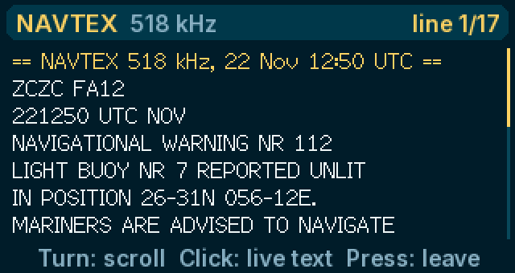
القراءة من جديد: السطر الأول من ١٧
مثل صفحة FT8، تحتاج هذه الصفحة إلى اللوحة V4B ونزع السمّاعات، وتوقف Wi-Fi مؤقتًا إلا إذا كان التحكم عبر المتصفح مفتوحًا في متصفح أو كان برنامج متصلًا عبر Wi-Fi.
٢٥الرسائل المفكوكة في المتصفحR5
افتح التحكم عبر المتصفح (القسم ٢١) وتبويب Decodes فيه. يبقى Wi-Fi يعمل ما دام التحكم عبر المتصفح مفتوحًا، ومع مفكّك ترميز يعمل على الراديو يُظهر التبويب:
النطاق على شكل شلال؛
كل رسالة FT8 وFT4 مع بلد المحطة وعلمها؛
خريطة للمحطات التي أرسلت مربّع موقعها (locator)؛ اكتب مربّع موقعك في My locator لترى خطوطًا تبدأ منك؛
النص الكامل لـ RTTY وNAVTEX وPSK31 في مربع قابل للتمرير، مع Save text؛ ونص CW؛ وخريطة WEFAX مع Save picture؛
جدول مواعيد NAVTEX: أيّ محطة تبثّ الآن وأيّها التالية؛
DX alarm: اكتب إشارات نداء أو بلدانًا لتسمع نغمة حين يُفكّ أحدها؛ وينزّل Save log القائمة.
تبويب Decodes: صفّ مفكّك الترميز والشلال
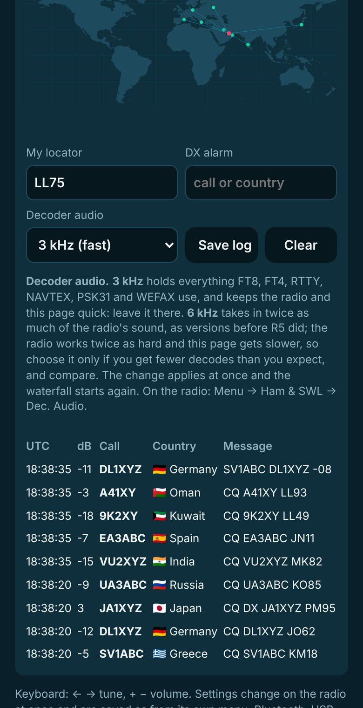
إلى الأسفل: مربّع الموقع، وDX alarm، والرسائل
تشغيل مفكّك ترميز من المتصفح
يبدأ الصفّ Decoder on the radio مفكّكات الترميز ويوقفها دون لمس الراديو. اختر FT8 أو FT4 ونطاقًا، أو CW أو RTTY أو RTTY DWD أو NAVTEX أو PSK31 أو WEFAX، واضغط Start. ينتقل FT8 وFT4 إلى النطاق الذي تختاره، وNAVTEX إلى القناة التي تختارها في القائمة الثانية. ولـ RTTY وRTTY DWD وPSK31 وWEFAX تضمّ القائمة الثانية ترددات يُسمع عليها كلّ منها (هيئة الأرصاد الألمانية، وNorthwood، وأجزاء RTTY وPSK31 من النطاقات)، أو As tuned للبقاء حيث الراديو؛ ويفكّ CW الترميز حيث الراديو. وأثناء عمل CW أو أحد أنماط Digital، يُظهر الصفّ تحت الأزرار تردد الراديو: يعمل ◀ ▶ عمل مقبض الراديو (يوالفان، أو ينتقلان بين قنوات NAVTEX)، وينتقل Tune إلى التردد الذي تكتبه، مع البقاء في USB. ويغلق Stop مفكّك الترميز ويعود الراديو إلى حيث كان. ويقول السطر بجانب الأزرار ما الذي يعمل.
النص الكامل وحفظه
لـ RTTY وNAVTEX وPSK31 يضمّ المربع تحت الشلال النص الكامل الذي فكّه الراديو، مع فواصل أسطره، ويتبعه وهو يكبر. مرّر إلى الأعلى للقراءة؛ ويبقى حيث تتركه. ويجلب المتصفح من الراديو كل ما لم يصله بعد، فيكون النص الذي فُكّ قبل فتح الصفحة موجودًا أيضًا.
ينزّله Save text ملفًا نصيًا. ويفرغ Clear text المربع في هذه الصفحة فقط.
ينزّل Save audio (WAV) الصوت الذي سمعه مفكّك الترميز، آخر دقيقة منه منذ آخر تغيير للنمط أو القناة: أرسله مع البلاغ حين تُسمع محطة ولا يُفكّ ترميزها.
الخطّان الأحمران على الشلال هما النغمتان اللتان يستمع إليهما مفكّك الترميز، كما في الراديو. وبجانب النمط، في الأعلى يمينًا، تعني sync أن NAVTEX مقفل على المحطة.
الشلال مع النغمتين، والنص الكامل، وSave text
جدول مواعيد NAVTEX
اختر NAVTEX فيُفتح جدول مواعيد تحت الأزرار، للقناة المختارة في القائمة الثانية. ترسل كل محطة NAVTEX عشر دقائق كل أربع ساعات، في الدور الذي يعطيه لها حرفها: A عند 00:00 UTC، وB عند 00:10، وهكذا حتى X عند 03:50. والحرف نفسه يفتتح كل رسالة من رسائلها: ZCZC FA12 تأتي من المحطة F.
تعلّم now، بالأخضر، المحطة التي تبثّ الآن، مع الدقائق المتبقية لها. وتتبعها الأخرى بترتيب مجيئها.
اكتب My locator (في أسفل التبويب) فيُظهر الجدول المسافة إلى كل محطة. ثم يرتّب Order حسب الوقت أو Nearest first، ويُبقي Range المحطات ضمن 1500 أو 3000 أو 6000 km.
النقر على سطر يبدأ NAVTEX على تلك القناة. ويفتح Show all القائمة كلّها.
518 kHz بالإنجليزية، و490 kHz بلغة البلد نفسه، و4209.5 kHz تصل بعيدًا على الموجات القصيرة. والليل أفضل على 518 و490 kHz. وتحمل القنوات الثماني على الموجات القصيرة في أسفل القائمة معلومات السلامة لأعالي البحار؛ والمحطات التي ترسل عليها قليلة وليس لها جدول مواعيد.
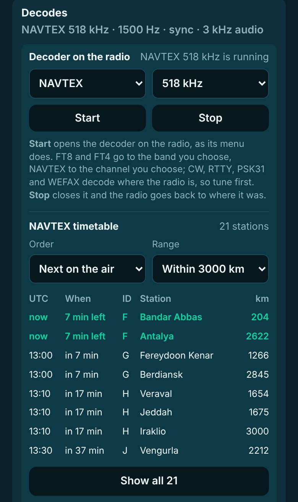
NAVTEX مختار: جدول المواعيد، وأقرب المحطات إلى مستمع في دبي
يضمّ الجدول ٢٣٨ محطة، قورنت في ٢٢ نوفمبر ٢٠٢٦ بقوائم محطات عامة (القسم ٢٩). والمحطات تتغيّر، ومفكّك ترميز في راديو جيبي ليس للملاحة.
صوت مفكّك الترميز: 3 kHz أو 6 kHz
تستمع صفحتا FT8/FT4 وDigital إلى صوت الراديو نفسه، ويحدّد هذا الإعداد مقدار ما تأخذانه منه.
الإعداد
ما يفعله
3 kHz fast (الافتراضي)
الصوت حتى 3 kHz. وهذا يضمّ كل ما تستعمله FT8 وFT4 وRTTY وNAVTEX وPSK31 وWEFAX، بنصف الجهد، فيبقى الراديو والتحكم عبر المتصفح سريعين. اتركه على هذا.
6 kHz full
الصوت حتى 6 kHz، كما كانت الإصدارات قبل R5 تأخذه. يعمل الراديو بضعف الجهد وقد يصبح المتصفح أبطأ. لا تختره إلا إذا حصلت على رسائل مفكوكة أقلّ مما تتوقّع، وقارن بين الاثنين على النطاق نفسه بضع دقائق لكلٍّ منهما.
على الراديو هو Menu ← Ham & SWL ← Dec. Audio، ويُضبط قبل فتح صفحة FT8/FT4 أو Digital. وفي التحكم عبر المتصفح هو قائمة Decoder audio في تبويب Decodes؛ وهناك يُطبَّق التغيير فورًا، ويبدأ الشلال من جديد. ويُظهر التبويب أيّهما مستعمل (3 kHz audio أو 6 kHz audio). ولا يتأثّر مفكّك ترميز CW.
٢٦إشارات لتجربة مفكّكات الترميزR5
مفكّك الترميز الذي لا يُظهر شيئًا يستمع في الغالب إلى تردد خالٍ. هذه الإشارات تبثّ بما يكفي لتجربة كل مفكّك ترميز، في صفحة الراديو نفسها أو من تبويب Decodes في التحكم عبر المتصفح. تعني No signal أو Nothing decoded yet أنه لم يُستقبل شيء، لا أن شيئًا معطّل. والترددات والأوقات تتغيّر: ابحث عنها من جديد إن لم تجد محطة.
ابدأ بـ FT8 على 20 m نهارًا. إن امتلأت القائمة، فالراديو والهوائي ومدخل مفكّك الترميز تعمل كلّها، والصفحة الفارغة في نمط آخر تعني فقط أن المحطة غير موجودة أو أضعف من اللازم. بجانب نافذة، أو مع بضعة أمتار من السلك على الهوائي، يُسمع أكثر بكثير.
أكثر الإشارات ازدحامًا على الموجات القصيرة: قائمة بإشارات النداء خلال دقيقة على نطاق مفتوح. جرّب هذا أولًا: إن فكّ FT8 الترميز، فالهوائي والنطاق والساعة على ما يرام.
FT4
20M، 14.080 MHz. محطات أقلّ بكثير من FT8، معظمها في نهاية الأسبوع وفي المسابقات.
كتل قصيرة مدتها نحو 4.5 ثانية في الشلال. قارن بـ FT8 على النطاق نفسه: إن كان FT8 ممتلئًا وشلال FT4 فارغًا، فلا أحد على FT4.
CW
المنارات على 14.100 MHz (القسم ١٠)، أو الطرف الأدنى من 40M و20M: من 7.000 إلى 7.040 ومن 14.000 إلى 14.070 MHz.
إشارات نداء ونداءات CQ. ترسل المنارة إشارة ندائها، ثم أربع شرطات طويلة.
RTTY DWD
هيئة الأرصاد الجوية الألمانية، ليلًا ونهارًا على 4583 و7646 و10100.8 kHz. والِف أدنى بـ 1.5 kHz بنمط USB: 10099.3 kHz، أو 7644.5 و4581.5 kHz ليلًا.
أسطر من RYRYRY بين النشرات، ثم تقارير الطقس وتوقّعاته، بالإنجليزية غالبًا. ويظهر تردد النغمة بالأخضر مكان No signal. وهي تأتي من ألمانيا: بعيدًا عنها تكون ضعيفة، وأفضل وقت لها المساء.
RTTY
RTTY الهواة، من 14.080 إلى 14.099 MHz، غالبًا في نهاية الأسبوع وفي المسابقات.
نداءات CQ وتبادلات المسابقات بحروف كبيرة.
NAVTEX
518 kHz (توالفه الصفحة؛ وينتقل المقبض إلى 490 و4209.5 kHz). ترسل كل محطة ساحلية عشر دقائق كل أربع ساعات، كلّ في وقتها: يُظهر جدول مواعيد NAVTEX في تبويب Decodes (القسم ٢٥) من يبثّ ومن التالي. والليل أفضل.
تحذيرات ملاحية وطقس للسفن، تبدأ بـ ZCZC وتنتهي بـ NNNN.
PSK31
14.070 MHz USB، وكذلك 7.040 MHz. المحطات قليلة هذه الأيام.
خطوط ضيّقة ثابتة في الطيف؛ حروف صغيرة وكبيرة، تُكتب باليد.
خريطة طقس تُرسم سطرًا بعد سطر: تستغرق الخريطة الكاملة من ١٠ إلى ٢٠ دقيقة. والصورة المائلة تدلّ مع ذلك على أن الإشارة تُقرأ.
٢٧إشعار الإصدار الجديد والنسخة الاحتياطية وصفحة StatusR5
إشعار الإصدار الجديد
مع اتصال Wi-Fi، يبحث الراديو عن إصدار أحدث من RESONIK بعد بضع دقائق من الانضمام إلى الشبكة، ثم مرة كل يوم. وحين يوجد واحد يُظهر صفحة فيها Update now وLater وSkip this version؛ والتحديث يحتفظ بالإعدادات والذاكرات. ويدلّ سهم صغير بجانب أيقونة Wi-Fi، وشريط في صفحات الويب للراديو، على أن تحديثًا ينتظر. يوقف Menu ← System ← Upd. Notice ← Off بحث الراديو؛ ويبقى Menu ← System ← Update FW يتحقّق ويحدّث حين تطلب.
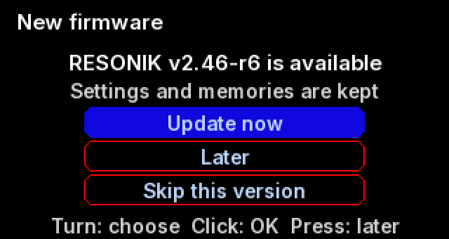
الصفحة التي تظهر حين يصدر إصدار أحدث
النسخ الاحتياطي والاستعادة
في أسفل صفحة الويب Config للراديو قسم Backup and Restore. يحفظ Download a backup ملفًا واحدًا فيه كل الإعدادات والنطاقات والذاكرات وشبكات Wi-Fi. ويأخذ Restore ملفًا كهذا، من هذا الراديو أو من غيره، ويستبدل به كل شيء ويعيد تشغيل الراديو. احفظ نسخة احتياطية قبل إعادة ضبط المصنع، ولإعداد راديو ثانٍ مثل الأول.
يحمل ملف النسخة الاحتياطية كلمات مرور Wi-Fi الخاصة بك. احتفظ به لنفسك.
صفحة Status
أولى صفحات الويب للراديو، Status، تُظهر العنوان، والبرنامج الثابت، والساعة، والنطاق والتردد، ومنذ R5 أيضًا مدة تشغيل الراديو، وسبب آخر إعادة تشغيل (التشغيل، أو التحديث، أو عطل مفاجئ، أو المراقب watchdog، أو انخفاض الجهد)، وحرارة المعالج والسرعة التي ضبطتها، والذاكرة الحرّة، وإشارة Wi-Fi. ويقول كل رقم بكلمة إن كان جيدًا أو مقبولًا أو سيئًا، بالأخضر أو الأصفر أو الأحمر. وإذا أعاد الراديو تشغيل نفسه يومًا، فاقرأ Last restart هنا قبل إطفائه، وأرسله مع بلاغك.
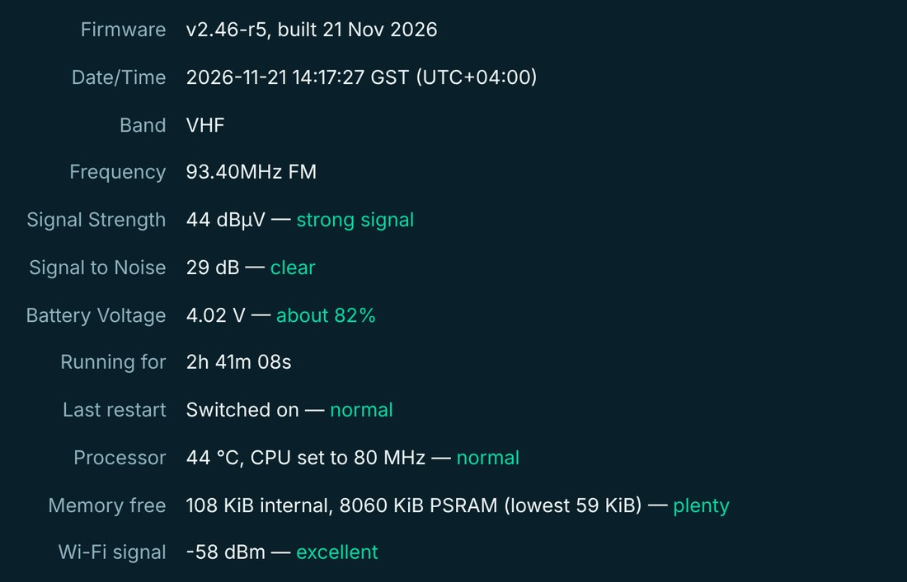
صفحة Status: كل رقم مع حكمه
٢٨الملاحظات وحل المشكلات
كل بلاغ، خطأ صغير أو اقتراح، يساعد الإصدار التالي. اكتب في مجموعة Telegram أو افتح Issue على GitHub: github.com/ep3mhb/resonik-ats-mini/issues. ويُرجى ذكر:
طراز الراديو (V3 أو V4 أو V4B)
إصدار البرنامج الثابت (Menu ← System ← About)
ما فعلته وما حدث
إن أمكن، صورة أو مقطع فيديو قصير للشاشة
مشكلات شائعة
المشكلة
الحل
يقفز المقبض خطوات، أو يحتاج إلى نقرتين لخطوة واحدة
Menu ← System ← Knob: القيمة الأخرى (20 أو 30 نقرة)
تُظهر الساعة --:--
القسم ٧: نمط Wi-Fi Sync Only، أو اضبطها يدويًا
لا يظهر اسم المنارة
يجب أن تكون الساعة مضبوطة وصحيحة، وألّا يكون Beacons على Off
زر Install لا يُظهر منفذًا
جرّب كابل USB آخر (كابل بيانات)؛ وChrome أو Edge على حاسوب
تريد القائمة القديمة
Menu ← Display ← Menu Style ← Classic
جدول EiBi لا يُظهر الأيام
حمّل EiBi مرة أخرى
صفحة FT8 أو CW أو Digital: No audio، أو In 0
هذه الصفحات تحتاج إلى اللوحة V4B (صفحة Hardware في الموقع)، ونزع السمّاعات
مفكّك ترميز يُظهر No signal
لا يُستقبل شيء هناك: جرّب إشارات القسم ٢٦، وFT8 أولًا
أعاد الراديو تشغيل نفسه
دوّن Last restart في صفحة الويب Status (القسم ٢٧)
FT8 لا يفكّ شيئًا
جرّب نطاقًا آخر (20 أو 10 m نهارًا، و40 m ليلًا)؛ وخذ الراديو إلى نافذة وانزع الشاحن
صفحة الويب للراديو لا تُفتح
العنوان في أعلى Menu ← System ← Wi-Fi؛ ويجب أن يكون الهاتف أو الحاسوب على الشبكة نفسها
أتعلّم الأنماط الرقميةR5
دورة قصيرة في الاستماع. لكل نوع من الإشارات التي يفكّها الراديو، يقول هذا الملحق ما هو ومن يرسله، وكيف يبدو، وكيف توالفه، وكيف تقرأ ما يكتبه مفكّك الترميز، ويعطي تمرينًا للتجربة. وينتهي كل تمرين بما يدلّك على أنك أتقنته.
رسائل الأمثلة مختلَقة، بإشارات نداء للمثال. وصور الشلال محسوبة من إشارة كل نمط مع ضوضاء مضافة، لا مسجّلة، كي يظهر كل نمط بوضوح. وهي مرسومة كما يرسم تبويب Decodes شلاله: من 300 إلى 2700 Hz عرضًا، والأحدث في الأعلى.
ترتيب جيد لتعلّمها
الخطوة
النمط
لماذا بهذا الترتيب
١
FT8
يبثّ على كل نطاق مفتوح، ليلًا ونهارًا. إن فكّ الترميز، فالراديو والهوائي ومفكّك الترميز تعمل كلّها.
٢
منارات CW
ترسل المنارات على 14100 kHz إشارات ندائها وفق جدول ثابت، فتعرف ما يجب أن يكتبه مفكّك الترميز.
٣
RTTY DWD
يبثّ ليلًا ونهارًا، بالنوع نفسه من النشرات في كل مرة.
٤
NAVTEX
عشر دقائق كل أربع ساعات: الجدول يقول متى.
٥
WEFAX
صورة تتكوّن سطرًا بعد سطر: تحتاج إلى إشارة ثابتة وصبر.
٦
PSK31 وRTTY الهواة
أناس يكتبون باليد: محطات أقلّ، غالبًا مساءً وفي نهاية الأسبوع وفي المسابقات.
كل نمط أسهل مع بضعة أمتار من السلك على الهوائي، بجانب نافذة، وعلى البطارية، بعيدًا عن الشواحن ومصابيح LED. والإشارة التي لا تُفكّ تكون في الغالب أضعف من اللازم، لا موالَفة خطأً.
أ-١الأساسيات
ما النمط الرقمي. تحوّل المحطة المرسِلة النص، أو الصورة، إلى نغمات ضمن مدى الصوت البشري وترسلها على تردد لاسلكي. ويستقبلها الراديو بنمط USB صوتًا، ويعيد مفكّك الترميز الصوت نصًّا. ويقرأ مفكّك الترميز إشارات أضعف بكثير، أو أسرع بكثير، من أن تقرأها الأذن.
تردد الراديو والنغمة. في نمط USB يحوّل الراديو ما يقع فوق تردده مباشرة إلى صوت: الإشارة التي تعلو تردده بـ 1500 Hz تُسمع نغمةً ترددها 1500 Hz. والِف الراديو أعلى بـ 100 Hz فتنخفض النغمة 100 Hz. لذلك يتلازم رقمان: التردد الذي عليه الراديو (kHz، في رأس الصفحة) والنغمة التي وجدها مفكّك الترميز (Hz، بالأخضر).
لماذا توالف أدنى من التردد المنشور. تعطي قوائم المحطات تردد الإشارة نفسها. ولتُسمع نغماتها في وسط الصوت، حول 1500 Hz، يُوالَف الراديو أدنى منها بهذا المقدار: أدنى بـ 1.5 kHz لـ RTTY DWD، وبـ 1.9 kHz لـ WEFAX التي تتمركز نغماتها حول 1900 Hz. وتوالف الصفحاتُ NAVTEX وFT8 وFT4 بنفسها؛ ولـ FT8 وFT4 يكون التردد المنشور هو الذي يُضبط عليه الراديو، وتنتشر المحطات على الـ 3 kHz فوقه.
السرعة والإزاحة. البود (baud) هو عدد الرموز التي ترسلها المحطة في الثانية؛ وفي RTTY وNAVTEX يكون الرمز بتًّا واحدًا. والإزاحة (shift) هي المسافة بين نغمتَي RTTY وNAVTEX. وكلما كان النمط أبطأ، أوصل إشارات أضعف: يحتاج FT8 إلى ١٣ ثانية لرسالة قصيرة واحدة، ويقرأ إشارات لا تستطيع أن تسمعها.
الطيف والشلال. يُظهر الطيف في صفحة Digital على الراديو قوة كل نغمة في هذه اللحظة. ويضيف الشلال، في صفحة FT8 وفي تبويب Decodes، الزمنَ: كل سطر لحظة، والأحدث في الأعلى، فترسم كل إشارة أثرًا. وعرض الأثر هو مقدار ما تشغله الإشارة من النطاق؛ ويدلّ شكله على طريقة إرسالها.
نسبة الإشارة إلى الضوضاء بالديسيبل. يعطي FT8 وFT4 كل رسالة رقمًا مثل −12: مقدار ما تعلو الإشارة فوق الضوضاء، بالديسيبل (dB)، والضوضاء مقيسة على عرض 2500 Hz. و0 dB تعني أنها بقوة كل تلك الضوضاء؛ و−20 dB جزء من مئة منها، وما زالت تُفكّ. وكل 3 dB تضاعف القدرة، و10 dB عشرة أضعاف.
UTC. تستعمل المحطات وجداول المواعيد ومفكّكات الترميز التوقيت العالمي المنسّق. ويُظهره الراديو بجانب الوقت المحلي (القسم ٧). وUTC متأخّر أربع ساعات عن توقيت الإمارات، وثلاث ساعات ونصفًا عن توقيت إيران.
مربّعات الموقع. مربّع الموقع (locator) مثل LL75 يسمّي مربّعًا على الخريطة، درجتان طولًا في درجة واحدة عرضًا؛ وLL75 يغطّي دبي. وتحمل رسائل FT8 مربّعات من أربعة محارف، ويضعها تبويب Decodes على خريطته. اكتب مربّعك في My locator لترى المسافات.
أ-٢FT8 وFT4
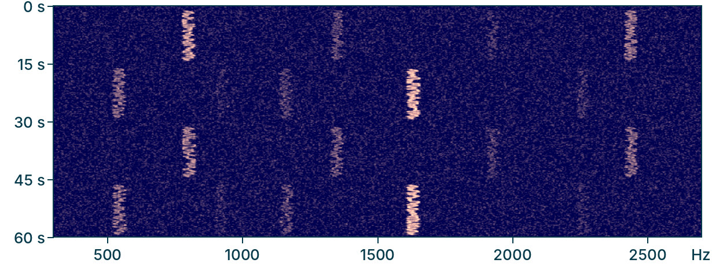
FT8، دقيقة واحدة (محاكاة): تتناوب محطات الفترتين كل ١٥ ثانية
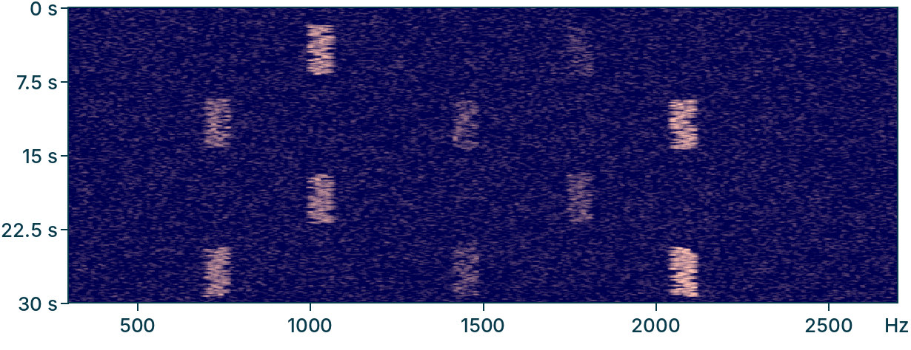
FT4، نصف دقيقة (محاكاة): كتل أعرض، كل 7.5 ثانية
ما هو. أكثر الأنماط الرقمية استعمالًا على نطاقات الهواة، من برنامج WSJT-X لجو تايلور (K1JT) وزملائه (FT8 في ٢٠١٧، وFT4 في ٢٠١٩). تتناوب المحطات حسب الساعة: يرسل FT8 مدة 12.6 ثانية في كل فترة من ١٥ ثانية، وFT4 مدة ٥ ثوانٍ في كل 7.5. والاتصال تبادل قصير ثابت لإشارات النداء ومربّع الموقع وتقارير الإشارة، فيمرّ بإشارات ضعيفة جدًا: FT8 حتى نحو −21 dB، وFT4 يحتاج إلى إشارة أقوى بنحو 3 dB.
كيف يبدو. كتل عرضها نحو 50 Hz (وFT4: نحو 80 Hz)، وطولها طول الإرسال، في صفّ عند كل فترة. والمحطات التي تنادي في الفترة الأخرى تملأ الفراغات بين الصفوف.
كيف توالفه. لا شيء لتوالفه: تنتقل صفحة FT8/FT4 (القسم ١٦) إلى تردد FT8 أو FT4 في النطاق، وتُفكّ كل إشارة في الـ 3 kHz فوقه دفعة واحدة. اختر 20 m أو 15 m نهارًا، و40 m أو 80 m ليلًا.
كيف تقرؤه. يُدرج الراديو كل رسالة مع قيمتها بالـ dB ونغمتها (Hz) ونصّها؛ ويضيف تبويب Decodes البلد والخريطة. وهذا اتصال كامل، بالترتيب الذي يجري به:
ما يكتبه مفكّك الترميز
معناه
CQ K1ABC FN42
ينادي K1ABC أيّ محطة (CQ)، من مربّع الموقع FN42، في شمال شرق الولايات المتحدة.
K1ABC G4XYZ IO91
يردّ G4XYZ على K1ABC، من IO91، في منطقة لندن.
G4XYZ K1ABC -12
يعطي K1ABC تقريره لـ G4XYZ: −12 dB.
K1ABC G4XYZ R-08
يؤكّد G4XYZ الاستلام (R، أي roger) ويعطي تقريره: −8 dB.
G4XYZ K1ABC RR73
K1ABC: استُلم كل شيء، مع أطيب التحيات (73). اكتمل الاتصال.
K1ABC G4XYZ 73
يودّع G4XYZ.
إشارة النداء الأولى هي المحطة المُنادى عليها، والثانية هي التي تنادي. ويطلب CQ DX المحطات البعيدة فقط؛ وCQ متبوعًا بكلمة أخرى، مثل TEST أو POTA، يقول من المطلوب.
تمرين
افتح FT8 على 20 m نهارًا، أو على 40 m مساءً، واتركه يعمل خمس دقائق وتبويب Decodes مفتوح.
جد ثلاثة نداءات CQ والبلدان التي جاءت منها.
تتبّع اتصالًا واحدًا من CQ إلى 73 ودوّن من أرسل كل سطر.
جد أضعف رسالة (أدنى dB) واستمع: هل تسمعها أصلًا؟
أتقنته حين تستطيع أن تقول، لأيّ سطر، من ينادي مَن وما الذي أُرسل.
أ-٣CW
ما هو. شفرة مورس: أقدم طريقة لإرسال النص لاسلكيًا، وما زال الهواة يستعملونها كل يوم، وفي المسابقات، وفي المنارات. تُقطع نغمة وتوصل نقاطًا وشرطات. وتُقاس السرعة بالكلمات في الدقيقة (WPM)؛ وعند 20 WPM تدوم النقطة 60 ms (1200 مقسومة على WPM).
كيف يبدو. خطّ رفيع متقطّع إلى نقاط وشرطات. وتقع عدة محطات بسرعات مختلفة جنبًا إلى جنب.
CW، ثماني ثوانٍ (محاكاة): ثلاث محطات بسرعات 18 و28 و12 WPM
كيف توالفه. بنمط CW، والإشارة في وسط مرشّح CW. وتتبع صفحة مفكّك ترميز CW (القسم ١٧) السرعات من 5 إلى 40 WPM وتُظهر السرعة.
كيف تقرؤه. CW مليء بالاختصارات:
ما يكتبه مفكّك الترميز
معناه
CQ CQ DE K1ABC K1ABC K
نداء لأيّ محطة (CQ) من (DE) K1ABC؛ حوّل (K).
K1ABC DE G4XYZ G4XYZ K
يجيب G4XYZ.
GE UR RST 579 NAME JOE
مساء الخير؛ تقريرك 579: الوضوح ٥ من ٥، والقوة ٧ من ٩، والنغمة ٩ من ٩؛ اسمي جو.
QTH LONDON
موقعي لندن.
TU 5NN 14
تبادل في مسابقة: شكرًا، 599 (N تعني ٩)، المنطقة ١٤.
73 SK
أطيب التحيات؛ نهاية الاتصال.
اختصارات أخرى: TNX شكرًا، FER لأجل، PSE من فضلك، R استُلم، AGN مرة أخرى، KN حوّل إلى المحطة المُنادى عليها فقط، AR نهاية الرسالة. ويكتب مفكّك الترميز * مكان الحرف الذي لا يستطيع قراءته.
تمرين
والِف 14100 kHz بنمط CW وافتح مفكّك ترميز CW. تتناوب المنارات هناك (القسم ١٠) كل عشر ثوانٍ؛ وترسل كلّ منها إشارة ندائها، ثم أربع شرطات طويلة، كلّ منها أضعف بعشر مرات من التي قبلها.
دوّن ثلاث إشارات نداء يُظهرها مفكّك الترميز وقارنها بأسماء المنارات في سطر المحطة على الراديو.
عُدّ الشرطات التي تسمعها: سماع الأربع كلها يعني أن المسار مفتوح حتى بعُشر واط.
مساءً، والِف أسفل نطاق 40 m (من 7000 إلى 7040 kHz)، وجد نداء CQ واقرأ إشارة النداء والسرعة.
أتقنته حين تطابق إشاراتُ النداء من مفكّك الترميز المناراتِ التي يسمّيها الراديو.
لتقرأ شفرة مورس بأذنك، تدرّب مع RESONIK CW Trainer على cw.mikroutik.com.
أ-٤RTTY
ما هو. الطباعة اللاسلكية عن بُعد (Radioteletype): شفرة المبرقات الكاتبة في القرن الماضي، ITA2 (وتُسمّى غالبًا شفرة بودو Baudot)، مرسلة بنغمتين. كل حرف خمس بتّات بين بتّ بداية وبتّات توقّف؛ ويرسل الهواة 45.45 بتًّا في الثانية والنغمتان متباعدتان 170 Hz، أي نحو ستة أحرف في الثانية. واليوم يُسمع غالبًا في المسابقات، حين تعمل محطات كثيرة في وقت واحد.
كيف يبدو. خطّان متوازيان بينهما 170 Hz، كلاهما ساطع ما دامت المحطة ترسل، لأنها تنتقل بينهما أسرع مما يستطيع الشلال إظهاره.
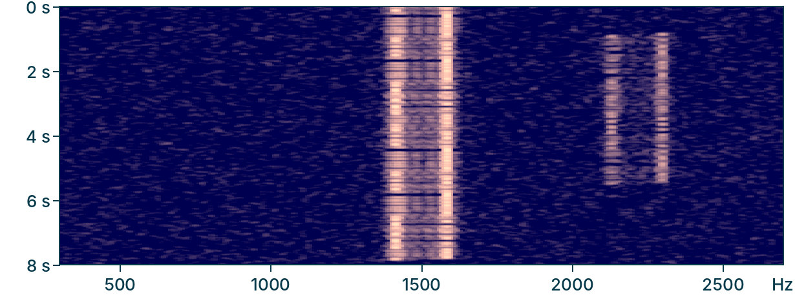
RTTY، ثماني ثوانٍ (محاكاة): محطة تنادي، وأخرى أضعف
كيف توالفه. أدِر المقبض ببطء عبر جزء RTTY من النطاق، من 14080 إلى 14099 kHz على 20 m، حتى تستقرّ قمّتان على الخطّين الأحمرين في الصفحة (القسم ٢٤). ويقرأ مفكّك الترميز المحطات العادية والمعكوسة على السواء.
كيف تقرؤه. في ITA2 حروف كبيرة فقط، والأرقام تتشارك رموزها مع الحروف: ويُنتقل بينهما بمحرف «حروف» أو محرف «أرقام». وحين يضيع هذا الانتقال، تخرج الأرقام بصورة حروف الصف العلوي من لوحة المفاتيح: يُقرأ 599 على أنه TOO، لأن 5 وT، و9 وO، يتشاركان رمزًا (1 هو Q، و2 هو W، و3 هو E، وهكذا حتى 0 وهو P). وبعد المسافة يعود مفكّك الترميز إلى الحروف، كما تتوقّع معظم المحطات. اتصال في مسابقة:
ما يكتبه مفكّك الترميز
معناه
CQ TEST K1ABC K1ABC
ينادي K1ABC في مسابقة.
K1ABC G4XYZ
يجيب G4XYZ.
G4XYZ 599 05 05
K1ABC: التقرير 599، ومنطقته، ٥، مرسلة مرتين.
K1ABC TU 599 14 14
G4XYZ: شكرًا، 599، المنطقة ١٤.
TU K1ABC TEST
K1ABC: شكرًا، ثم ينادي من جديد.
تمرين
اختر عطلة نهاية أسبوع فيها مسابقة RTTY (مثل CQ WPX RTTY في فبراير، أو CQ WW RTTY في سبتمبر).
على 20 m، أدِر المقبض ببطء صعودًا من 14080 kHz وتوقّف عند كل زوج من الخطوط.
دوّن إشارات النداء والتبادل في ثلاثة اتصالات.
أتقنته حين تستطيع أن تعرف السطر التالي قبل أن يأتي.
أ-٥RTTY DWD: الطقس للسفن
ما هو. ترسل هيئة الأرصاد الجوية الألمانية (Deutscher Wetterdienst، DWD) نشرات الطقس للسفن بـ RTTY من بينيبرغ (Pinneberg) قرب هامبورغ، ليلًا ونهارًا: ٥٠ بود والنغمتان متباعدتان 450 Hz، على 4583 و7646 و10100.8 kHz، بالإنجليزية غالبًا. وهو بثّ: لا أحد يجيب، والأنواع نفسها من النشرات تأتي في أوقات ثابتة.
كيف يبدو. خطّان ثابتان بينهما 450 Hz. وبين النشرات ترسل المحطة RYRYRY: الحرفان R وY نمطان متعاكسان من البتّات، لاختبار الوصلة.
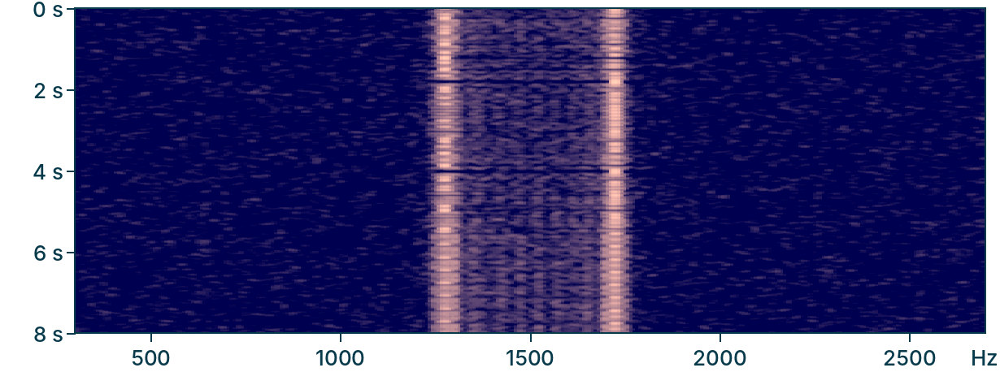
RTTY DWD، ثماني ثوانٍ (محاكاة): RYRYRY، ثم ترويسة
كيف توالفه. أدنى بـ 1.5 kHz من التردد المنشور: 10099.30 kHz نهارًا، و7644.50 أو 4581.50 kHz ليلًا. والقائمة الثانية في تبويب Decodes تضمّ الثلاثة كلها.
كيف تقرؤه. تبدأ كل نشرة بترويسة تسمّيها، ثم تعطي التوقّعات لكل منطقة بحرية. مثال مختلَق:
ما يكتبه مفكّك الترميز
معناه
RYRYRYRYRYRY
بين النشرات: مفكّك الترميز متزامن مع الإشارة.
FQEN70 EDZW 221100
الترويسة. FQEN70 هي النشرة (في جدول مواعيد DWD، تقرير الطقس لبحر الشمال وبحر البلطيق)؛ وEDZW هي هيئة الأرصاد الألمانية؛ و221100 تعني اليوم ٢٢ من الشهر عند الساعة 11:00 UTC.
GERMAN BIGHT
منطقة بحرية (الخليج الألماني).
SW 5, LATER W 6
رياح جنوبية غربية بقوة ٥ على مقياس بوفورت، ثم غربية بقوة ٦. القوة ٥ من ١٧ إلى ٢١ عقدة، والقوة ٦ من ٢٢ إلى ٢٧.
SEA 2 M, VIS GOOD
أمواج بارتفاع نحو مترين؛ ورؤية جيدة.
تنشر DWD جدول مواعيد نشراتها على موقعها (dwd.de، في قسم الملاحة البحرية)؛ ومن بينها تقرير لشرق البحر المتوسط، بالإنجليزية.
أتقنته حين يُقرأ النص كلماتٍ كاملة دقيقةً متواصلة. وإن كثرت الأخطاء في الحروف، فجرّب ترددًا آخر من الثلاثة.
أ-٦NAVTEX
ما هو. ترسل المحطات الساحلية رسائل السلامة للسفن: التحذيرات الملاحية، والطقس، والبحث والإنقاذ. وترسل كل محطة عشر دقائق كل أربع ساعات، في الدور الذي يعطيه لها حرفها: على 518 kHz بالإنجليزية، وعلى 490 kHz بلغة البلد نفسه، وعلى 4209.5 kHz على الموجات القصيرة. والإشارة SITOR-B: ١٠٠ بود، وإزاحة 170 Hz، وكل حرف يُرسل مرتين، فيستعمل مفكّك الترميز النسخة الثانية حين تفسد الأولى.
كيف يبدو. خطّان بينهما 170 Hz، مثل RTTY لكن أسرع. وتبدأ كل رسالة بعشر ثوانٍ على الأقل من المزامنة الطورية (phasing)، وهي نمط ثابت يتيح للمستقبل أن يقفل على الإشارة: sync في الصفحة.
NAVTEX، ثماني ثوانٍ (محاكاة): المزامنة الطورية، ثم رسالة
كيف توالفه. لا شيء لتوالفه: انتقل إلى القناة بتدوير المقبض، أو باختيارها في تبويب Decodes. ويقول جدول المواعيد أيّ محطة هي التالية (القسم ٢٥).
كيف تقرؤه. لكل رسالة الإطار نفسه. مثال مختلَق:
ما يكتبه مفكّك الترميز
معناه
ZCZC FA12
بداية رسالة. F: حرف المحطة. A: الموضوع (أدناه). 12: رقم الرسالة؛ والرقم 00 محجوز لأشدّ الرسائل إلحاحًا، التي يطبعها كل مستقبل.
221250 UTC NOV 26
وقت إصدارها: اليوم ٢٢ عند الساعة 12:50 UTC، نوفمبر ٢٠٢٦.
NAV WARNING NR 112 …
نص الرسالة نفسه.
NNNN
نهاية الرسالة.
A تحذير ملاحي
B تحذير جوي
C تقرير الجليد
D البحث والإنقاذ، والقرصنة
E توقّعات الطقس
F خدمة الإرشاد البحري
G AIS
H LORAN
J الملاحة بالأقمار الصناعية
K وسائل ملاحية أخرى
L تحذيرات ملاحية إضافية
Z لا رسائل للإرسال
لا يستطيع مستقبل السفينة إيقاف A وB وD. والحروف من V إلى Y محجوزة لخدمات خاصة.
تمرين
في تبويب Decodes اختر NAVTEX واكتب مربّع موقعك: يُدرج جدول المواعيد أقرب المحطات ومن التالي.
شغّل NAVTEX على تلك القناة قبل دورها بدقيقتين وراقب ظهور sync.
لكل رسالة، دوّن حرف المحطة والموضوع والرقم من سطر ZCZC الخاص بها.
اقرأها مرة أخرى على الراديو (اضغط المقبض وأدِره) واحفظ النص من المتصفح.
أتقنته حين تستطيع أن تسمّي موضوع كل رسالة في دور واحد للمحطة. والليل أفضل على 518 و490 kHz؛ و4209.5 kHz تصل أبعد.
أ-٧PSK31
ما هو. محادثات مكتوبة بين الهواة، من ابتكار بيتر مارتينيز (G3PLX) عام ١٩٩٨. يُقلب طور نغمة واحدة لإرسال البتّات، 31.25 بتًّا في الثانية. وهو ضيّق جدًا حتى إن عشرات المحطات تتّسع في الـ 3 kHz التي يسمعها الراديو. وللحروف رموز بأطوال مختلفة، أقصرها للحروف الشائعة؛ والحروف الصغيرة أقصر من الكبيرة، ولذلك يكتب معظم الناس بحروف صغيرة.
كيف يبدو. خطّ رفيع. وحين تنتظر المحطة ترسل انقلابات طور ثابتة، تظهر خطّين بينهما 31 Hz؛ وحين تكتب يندمجان في خطّ واحد.
كيف توالفه. إلى التردد المنشور نفسه: 14070.00 kHz على 20 m، و7040.00 kHz على 40 m. وتقع المحطات في الـ 3 kHz فوقه. وتقرأ الصفحة أقواها؛ ويُظهر الخطّ الأحمر أيّها.
كيف تقرؤه. يشبه CW كثيرًا، لكن بحروف صغيرة:
ما يكتبه مفكّك الترميز
معناه
cq cq cq de k1abc k1abc pse k
نداء لأيّ محطة؛ أجيبوا من فضلكم.
k1abc de g4xyz g4xyz kn
يجيب G4XYZ، لـ K1ABC فقط (kn).
ge joe tnx fer call ur rst 599
مساء الخير يا جو، شكرًا على النداء، تقريرك 599.
73 tu sk
أطيب التحيات، شكرًا، نهاية الاتصال.
تمرين
والِف 14070.00 kHz مساء يوم من أيام نهاية الأسبوع وافتح PSK31.
انتظر حتى يندمج الأثر في خطّ واحد، ثم اقرأ إشارة النداء والاسم.
لاحظ أن النص يأتي بحروف صغيرة، بسرعة كتابة المحطة، ويتوقّف حين تتوقّف عن الكتابة.
أتقنته حين تستطيع أن تتابع دورًا كاملًا من المحادثة دون فجوات.
أ-٨WEFAX: خرائط الطقس
ما هو. خرائط طقس مرسلة صورًا (الفاكس اللاسلكي). ودرجة لون كل نقطة نغمةٌ بين 1500 Hz (أسود) و2300 Hz (أبيض)، بمعدّل ١٢٠ سطرًا في الدقيقة، فتستغرق الخريطة من ١٠ إلى ٢٠ دقيقة. وترسلها هيئات الأرصاد للسفن وفق جدول مواعيد ثابت؛ وترسل محطة نورثوود (Northwood) قرب لندن على 4610 و8040 و11086.5 kHz.
كيف يبدو. تبدأ الخريطة بنغمة بدء لبضع ثوانٍ (خطوط ساطعة على خطوات متساوية)، ثم خطوط المزامنة الطورية التي يجد بها مفكّك الترميز بداية كل سطر، ثم الصورة: شريط عريض من 1500 إلى 2300 Hz، أسطع ما يكون عند 2300 Hz حيث الورق أبيض.
WEFAX، ٢٤ ثانية (محاكاة): نغمة البدء، والمزامنة الطورية، والخريطة
كيف توالفه. أدنى بـ 1.9 kHz من التردد المنشور: 8038.10 kHz، و4608.10 kHz ليلًا، و11084.60 kHz نهارًا.
كيف تقرؤه. تُرسم الصورة على الراديو، وبحجم أكبر في تبويب Decodes، حيث ينزّلها Save picture. وتُظهر خريطة السطح الضغطَ بخطوط (خطوط تساوي الضغط)، والمرتفعات (H) والمنخفضات (L) والجبهات، مع العنوان والوقت الذي تصحّ له (UTC) في إحدى الزوايا. وتُظهر خرائط أخرى توقّعات ليوم أو أكثر، أو ارتفاعات الأمواج، أو حرارة البحر. والصورة المائلة قليلًا تدلّ على أن الإشارة ما زالت تُقرأ.
تمرين
والِف 8038.10 kHz نهارًا (4608.10 kHz ليلًا)، وافتح WEFAX على الراديو وتبويب Decodes في المتصفح.
أتقنته حين تستطيع أن تقرأ عنوان الخريطة والوقت الذي تصحّ له.
أ-٩المصطلحات المستعملة في هذا الملحق
73 أطيب التحيات.
Baud (البود) عدد الرموز المرسلة في الثانية؛ وفي RTTY وNAVTEX عدد البتّات في الثانية.
Beaufort (بوفورت) مقياس قوة الرياح في البحر، من ٠ إلى ١٢.
CQ نداء لأيّ محطة.
dB (الديسيبل) نسبة قدرة: 3 dB ضعفان، و10 dB عشرة أضعاف، و−20 dB جزء من مئة.
DE من.
Dial frequency (تردد الموالفة) التردد الذي يُوالَف عليه الراديو، كما يظهر على شاشته.
FSK الإبراق بإزاحة التردد: نغمتان، واحدة لكل نوع من البتّات.
ITA2 (Baudot) شفرة RTTY ذات البتّات الخمس.
K, KN حوّل؛ وKN: حوّل إلى المحطة المُنادى عليها فقط.
Locator (مربّع الموقع) مربّع على الخريطة مثل LL75، درجتان في درجة.
Mark, space (العلامة والفراغ) نغمتا RTTY وNAVTEX.
Phasing (المزامنة الطورية) نمط ثابت قبل رسالة NAVTEX أو خريطة فاكس، ليقفل المستقبل على الإشارة.
QTH الموقع.
RST تقرير الإشارة: الوضوح والقوة والنغمة، كما في 599.
RY نمط اختبار RTTY.
Shift (الإزاحة) المسافة بين النغمتين، بالـ Hz.
SNR نسبة الإشارة إلى الضوضاء، بالـ dB.
Slot, turn (الفترة) فترة واحدة من FT8 (١٥ ثانية) أو FT4 (7.5 ثانية).
Sync (التزامن) مفكّك الترميز مقفل على توقيت الإشارة.
Tone frequency (تردد النغمة) موضع الإشارة في الصوت، بالـ Hz.
USB النطاق الجانبي العلوي: يحوّل الراديو ما يقع فوق تردده مباشرة إلى صوت.
UTC التوقيت العالمي المنسّق.
Varicode شفرة PSK31: رموز قصيرة للحروف الشائعة.
Waterfall (الشلال) الطيف عبر الزمن، والأحدث في الأعلى.
WPM كلمات في الدقيقة؛ وتدوم النقطة 1200 مقسومة على WPM، بالميلي ثانية.
ZCZC, NNNN بداية رسالة NAVTEX ونهايتها.
٢٩المساهمون والترخيص
إصدار RESONIK: EP2MHB (محمد بحرالعلوم). مبنيّ على ats-mini من PU2CLR (Ricardo Caratti)، وVolos Projects، وRalph Xavier، وSunnygold، وGoshante، وG8PTN (Dave)، وR9UCL (Max Arnold)، وMarat Fayzullin، وجميع المساهمين. ويستعمل مفكّك ترميز FT8 مكتبة ft8_lib من Karlis Goba، متّبعًا النسخة المتفرّعة epiHATR؛ وبعض الإصلاحات من النسختين المتفرّعتين jokubasver وmattafaak. والشفرة المصدرية على GitHub بترخيص MIT.
قورن جدول محطات NAVTEX بقاعدة بيانات World NAVTEX Database for DXers من Alan Gale, G4TMV (ndblist.info)، وبصفحة List of Navtex stations في ويكيبيديا، وبملف المحطات في fldigi.
RESONIK غير مرتبط بصانعي أجهزة راديو ATS Mini. وتثبيت برنامج ثابت غير رسمي على مسؤوليتك؛ والنسخة الاحتياطية تتيح لك العودة. 73 de resonik.mikroutik.com